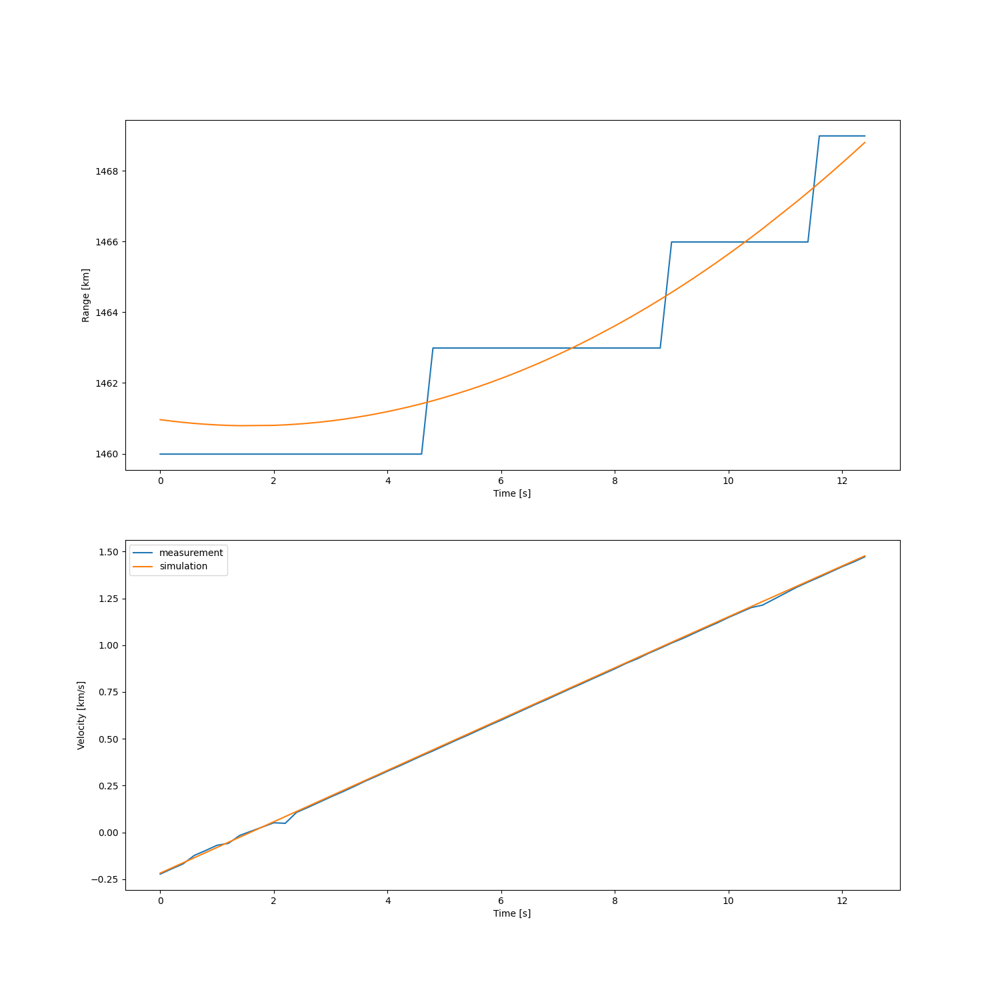
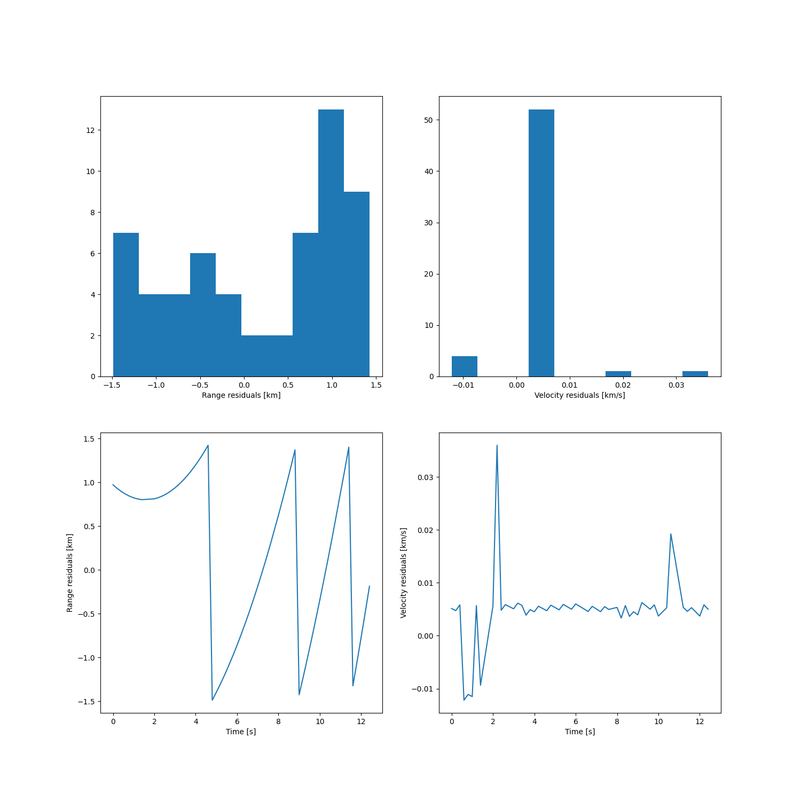
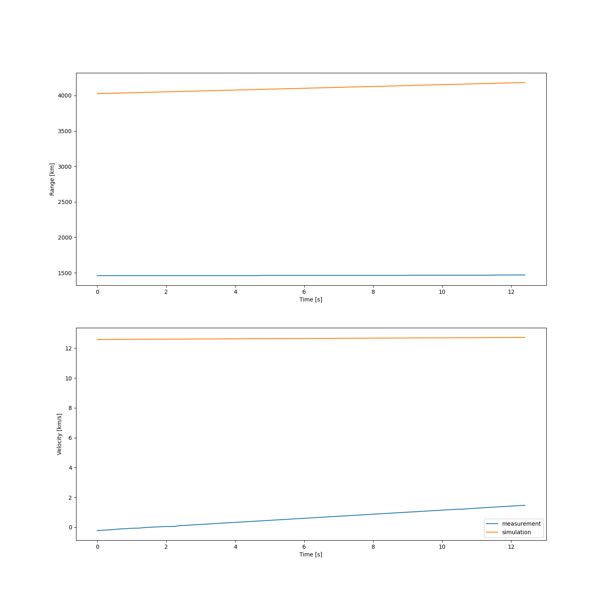
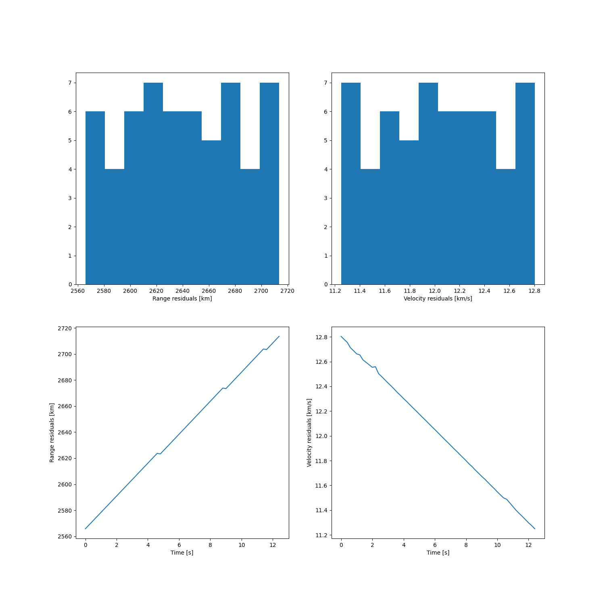

Note
Click here to download the full example code
Correlating data with TLE catalog¶
TO RUN THIS EXAMPLE, YOU NEED THE CELESTRACK CATALOG FROM 2018-01-01 in the ‘data/uhf_correlation/tle-201801.txt’ path




Out:
Loading EISCAT UHF monostatic measurements
Loading TLE population
population size: 853
Correlating data and population
0%| | 0/853 [00:00<?, ?it/s]
Correlating object 0 : 0%| | 0/853 [00:00<?, ?it/s]
Correlating object 1 : 0%| | 1/853 [00:00<00:11, 74.83it/s]
Correlating object 2 : 0%| | 2/853 [00:00<00:11, 76.35it/s]
Correlating object 3 : 0%|1 | 3/853 [00:00<00:10, 78.06it/s]
Correlating object 4 : 0%|1 | 4/853 [00:00<00:10, 78.47it/s]
Correlating object 5 : 1%|2 | 5/853 [00:00<00:10, 78.57it/s]
Correlating object 6 : 1%|2 | 6/853 [00:00<00:10, 78.91it/s]
Correlating object 7 : 1%|3 | 7/853 [00:00<00:10, 79.27it/s]
Correlating object 8 : 1%|3 | 8/853 [00:00<00:10, 79.41it/s]
Correlating object 8 : 1%|4 | 9/853 [00:00<00:09, 89.22it/s]
Correlating object 9 : 1%|4 | 9/853 [00:00<00:09, 89.22it/s]
Correlating object 10 : 1%|4 | 10/853 [00:00<00:09, 89.22it/s]
Correlating object 11 : 1%|4 | 11/853 [00:00<00:09, 89.22it/s]
Correlating object 12 : 1%|5 | 12/853 [00:00<00:09, 89.22it/s]
Correlating object 13 : 2%|5 | 13/853 [00:00<00:09, 89.22it/s]
Correlating object 14 : 2%|6 | 14/853 [00:00<00:09, 89.22it/s]
Correlating object 15 : 2%|6 | 15/853 [00:00<00:09, 89.22it/s]
Correlating object 16 : 2%|7 | 16/853 [00:00<00:09, 89.22it/s]
Correlating object 16 : 2%|7 | 17/853 [00:00<00:09, 86.22it/s]
Correlating object 17 : 2%|7 | 17/853 [00:00<00:09, 86.22it/s]
Correlating object 18 : 2%|8 | 18/853 [00:00<00:09, 86.22it/s]
Correlating object 19 : 2%|8 | 19/853 [00:00<00:09, 86.22it/s]
Correlating object 20 : 2%|8 | 20/853 [00:00<00:09, 86.22it/s]
Correlating object 21 : 2%|9 | 21/853 [00:00<00:09, 86.22it/s]
Correlating object 22 : 3%|9 | 22/853 [00:00<00:09, 86.22it/s]
Correlating object 23 : 3%|# | 23/853 [00:00<00:09, 86.22it/s]
Correlating object 24 : 3%|# | 24/853 [00:00<00:09, 86.22it/s]
Correlating object 24 : 3%|#1 | 25/853 [00:00<00:09, 83.78it/s]
Correlating object 25 : 3%|#1 | 25/853 [00:00<00:09, 83.78it/s]
Correlating object 26 : 3%|#1 | 26/853 [00:00<00:09, 83.78it/s]
Correlating object 27 : 3%|#2 | 27/853 [00:00<00:09, 83.78it/s]
Correlating object 28 : 3%|#2 | 28/853 [00:00<00:09, 83.78it/s]
Correlating object 29 : 3%|#2 | 29/853 [00:00<00:09, 83.78it/s]
Correlating object 30 : 4%|#3 | 30/853 [00:00<00:09, 83.78it/s]
Correlating object 31 : 4%|#3 | 31/853 [00:00<00:09, 83.78it/s]
Correlating object 32 : 4%|#4 | 32/853 [00:00<00:09, 83.78it/s]
Correlating object 33 : 4%|#4 | 33/853 [00:00<00:09, 83.78it/s]
Correlating object 33 : 4%|#5 | 34/853 [00:00<00:09, 82.72it/s]
Correlating object 34 : 4%|#5 | 34/853 [00:00<00:09, 82.72it/s]
Correlating object 35 : 4%|#5 | 35/853 [00:00<00:09, 82.72it/s]
Correlating object 36 : 4%|#6 | 36/853 [00:00<00:09, 82.72it/s]
Correlating object 37 : 4%|#6 | 37/853 [00:00<00:09, 82.72it/s]
Correlating object 38 : 4%|#6 | 38/853 [00:00<00:09, 82.72it/s]
Correlating object 39 : 5%|#7 | 39/853 [00:00<00:09, 82.72it/s]
Correlating object 40 : 5%|#7 | 40/853 [00:00<00:09, 82.72it/s]
Correlating object 41 : 5%|#8 | 41/853 [00:00<00:09, 82.72it/s]
Correlating object 41 : 5%|#8 | 42/853 [00:00<00:09, 81.19it/s]
Correlating object 42 : 5%|#8 | 42/853 [00:00<00:09, 81.19it/s]
Correlating object 43 : 5%|#9 | 43/853 [00:00<00:09, 81.19it/s]
Correlating object 44 : 5%|#9 | 44/853 [00:00<00:09, 81.19it/s]
Correlating object 45 : 5%|## | 45/853 [00:00<00:09, 81.19it/s]
Correlating object 46 : 5%|## | 46/853 [00:00<00:09, 81.19it/s]
Correlating object 47 : 6%|## | 47/853 [00:00<00:09, 81.19it/s]
Correlating object 48 : 6%|##1 | 48/853 [00:00<00:09, 81.19it/s]
Correlating object 49 : 6%|##1 | 49/853 [00:00<00:09, 81.19it/s]
Correlating object 49 : 6%|##2 | 50/853 [00:00<00:09, 80.49it/s]
Correlating object 50 : 6%|##2 | 50/853 [00:00<00:09, 80.49it/s]
Correlating object 51 : 6%|##2 | 51/853 [00:00<00:09, 80.49it/s]
Correlating object 52 : 6%|##3 | 52/853 [00:00<00:09, 80.49it/s]
Correlating object 53 : 6%|##3 | 53/853 [00:00<00:09, 80.49it/s]
Correlating object 54 : 6%|##4 | 54/853 [00:00<00:09, 80.49it/s]
Correlating object 55 : 6%|##4 | 55/853 [00:00<00:09, 80.49it/s]
Correlating object 56 : 7%|##4 | 56/853 [00:00<00:09, 80.49it/s]
Correlating object 57 : 7%|##5 | 57/853 [00:00<00:09, 80.49it/s]
Correlating object 58 : 7%|##5 | 58/853 [00:00<00:09, 80.49it/s]
Correlating object 58 : 7%|##6 | 59/853 [00:00<00:09, 80.49it/s]
Correlating object 59 : 7%|##6 | 59/853 [00:00<00:09, 80.49it/s]
Correlating object 60 : 7%|##6 | 60/853 [00:00<00:09, 80.49it/s]
Correlating object 61 : 7%|##7 | 61/853 [00:00<00:09, 80.49it/s]
Correlating object 62 : 7%|##7 | 62/853 [00:00<00:09, 80.49it/s]
Correlating object 63 : 7%|##8 | 63/853 [00:00<00:09, 80.49it/s]
Correlating object 64 : 8%|##8 | 64/853 [00:00<00:09, 80.49it/s]
Correlating object 65 : 8%|##8 | 65/853 [00:00<00:09, 80.49it/s]
Correlating object 66 : 8%|##9 | 66/853 [00:00<00:09, 80.49it/s]
Correlating object 66 : 8%|##9 | 67/853 [00:00<00:09, 80.27it/s]
Correlating object 67 : 8%|##9 | 67/853 [00:00<00:09, 80.27it/s]
Correlating object 68 : 8%|### | 68/853 [00:00<00:09, 80.27it/s]
Correlating object 69 : 8%|### | 69/853 [00:00<00:09, 80.27it/s]
Correlating object 70 : 8%|###1 | 70/853 [00:00<00:09, 80.27it/s]
Correlating object 71 : 8%|###1 | 71/853 [00:00<00:09, 80.27it/s]
Correlating object 72 : 8%|###2 | 72/853 [00:00<00:09, 80.27it/s]
Correlating object 73 : 9%|###2 | 73/853 [00:00<00:09, 80.27it/s]
Correlating object 74 : 9%|###2 | 74/853 [00:00<00:09, 80.27it/s]
Correlating object 75 : 9%|###3 | 75/853 [00:00<00:09, 80.27it/s]
Correlating object 75 : 9%|###3 | 76/853 [00:00<00:09, 80.30it/s]
Correlating object 76 : 9%|###3 | 76/853 [00:00<00:09, 80.30it/s]
Correlating object 77 : 9%|###4 | 77/853 [00:00<00:09, 80.30it/s]
Correlating object 78 : 9%|###4 | 78/853 [00:00<00:09, 80.30it/s]
Correlating object 79 : 9%|###5 | 79/853 [00:00<00:09, 80.30it/s]
Correlating object 80 : 9%|###5 | 80/853 [00:01<00:09, 80.30it/s]
Correlating object 81 : 9%|###6 | 81/853 [00:01<00:09, 80.30it/s]
Correlating object 82 : 10%|###6 | 82/853 [00:01<00:09, 80.30it/s]
Correlating object 83 : 10%|###6 | 83/853 [00:01<00:09, 80.30it/s]
Correlating object 84 : 10%|###7 | 84/853 [00:01<00:09, 80.30it/s]
Correlating object 84 : 10%|###7 | 85/853 [00:01<00:09, 80.25it/s]
Correlating object 85 : 10%|###7 | 85/853 [00:01<00:09, 80.25it/s]
Correlating object 86 : 10%|###8 | 86/853 [00:01<00:09, 80.25it/s]
Correlating object 87 : 10%|###8 | 87/853 [00:01<00:09, 80.25it/s]
Correlating object 88 : 10%|###9 | 88/853 [00:01<00:09, 80.25it/s]
Correlating object 89 : 10%|###9 | 89/853 [00:01<00:09, 80.25it/s]
Correlating object 90 : 11%|#### | 90/853 [00:01<00:09, 80.25it/s]
Correlating object 91 : 11%|#### | 91/853 [00:01<00:09, 80.25it/s]
Correlating object 92 : 11%|#### | 92/853 [00:01<00:09, 80.25it/s]
Correlating object 93 : 11%|####1 | 93/853 [00:01<00:09, 80.25it/s]
Correlating object 93 : 11%|####1 | 94/853 [00:01<00:09, 80.25it/s]
Correlating object 94 : 11%|####1 | 94/853 [00:01<00:09, 80.25it/s]
Correlating object 95 : 11%|####2 | 95/853 [00:01<00:09, 80.25it/s]
Correlating object 96 : 11%|####2 | 96/853 [00:01<00:09, 80.25it/s]
Correlating object 97 : 11%|####3 | 97/853 [00:01<00:09, 80.25it/s]
Correlating object 98 : 11%|####3 | 98/853 [00:01<00:09, 80.25it/s]
Correlating object 99 : 12%|####4 | 99/853 [00:01<00:09, 80.25it/s]
Correlating object 100 : 12%|####2 | 100/853 [00:01<00:09, 80.25it/s]
Correlating object 101 : 12%|####2 | 101/853 [00:01<00:09, 80.25it/s]
Correlating object 101 : 12%|####3 | 102/853 [00:01<00:09, 79.99it/s]
Correlating object 102 : 12%|####3 | 102/853 [00:01<00:09, 79.99it/s]
Correlating object 103 : 12%|####3 | 103/853 [00:01<00:09, 79.99it/s]
Correlating object 104 : 12%|####3 | 104/853 [00:01<00:09, 79.99it/s]
Correlating object 105 : 12%|####4 | 105/853 [00:01<00:09, 79.99it/s]
Correlating object 106 : 12%|####4 | 106/853 [00:01<00:09, 79.99it/s]
Correlating object 107 : 13%|####5 | 107/853 [00:01<00:09, 79.99it/s]
Correlating object 108 : 13%|####5 | 108/853 [00:01<00:09, 79.99it/s]
Correlating object 109 : 13%|####6 | 109/853 [00:01<00:09, 79.99it/s]
Correlating object 110 : 13%|####6 | 110/853 [00:01<00:09, 79.99it/s]
Correlating object 110 : 13%|####6 | 111/853 [00:01<00:09, 80.08it/s]
Correlating object 111 : 13%|####6 | 111/853 [00:01<00:09, 80.08it/s]
Correlating object 112 : 13%|####7 | 112/853 [00:01<00:09, 80.08it/s]
Correlating object 113 : 13%|####7 | 113/853 [00:01<00:09, 80.08it/s]
Correlating object 114 : 13%|####8 | 114/853 [00:01<00:09, 80.08it/s]
Correlating object 115 : 13%|####8 | 115/853 [00:01<00:09, 80.08it/s]
Correlating object 116 : 14%|####8 | 116/853 [00:01<00:09, 80.08it/s]
Correlating object 117 : 14%|####9 | 117/853 [00:01<00:09, 80.08it/s]
Correlating object 118 : 14%|####9 | 118/853 [00:01<00:09, 80.08it/s]
Correlating object 118 : 14%|##### | 119/853 [00:01<00:09, 80.01it/s]
Correlating object 119 : 14%|##### | 119/853 [00:01<00:09, 80.01it/s]
Correlating object 120 : 14%|##### | 120/853 [00:01<00:09, 80.01it/s]
Correlating object 121 : 14%|#####1 | 121/853 [00:01<00:09, 80.01it/s]
Correlating object 122 : 14%|#####1 | 122/853 [00:01<00:09, 80.01it/s]
Correlating object 123 : 14%|#####1 | 123/853 [00:01<00:09, 80.01it/s]
Correlating object 124 : 15%|#####2 | 124/853 [00:01<00:09, 80.01it/s]
Correlating object 125 : 15%|#####2 | 125/853 [00:01<00:09, 80.01it/s]
Correlating object 126 : 15%|#####3 | 126/853 [00:01<00:09, 80.01it/s]
Correlating object 126 : 15%|#####3 | 127/853 [00:01<00:09, 78.80it/s]
Correlating object 127 : 15%|#####3 | 127/853 [00:01<00:09, 78.80it/s]
Correlating object 128 : 15%|#####4 | 128/853 [00:01<00:09, 78.80it/s]
Correlating object 129 : 15%|#####4 | 129/853 [00:01<00:09, 78.80it/s]
Correlating object 130 : 15%|#####4 | 130/853 [00:01<00:09, 78.80it/s]
Correlating object 131 : 15%|#####5 | 131/853 [00:01<00:09, 78.80it/s]
Correlating object 132 : 15%|#####5 | 132/853 [00:01<00:09, 78.80it/s]
Correlating object 133 : 16%|#####6 | 133/853 [00:01<00:09, 78.80it/s]
Correlating object 134 : 16%|#####6 | 134/853 [00:01<00:09, 78.80it/s]
Correlating object 134 : 16%|#####6 | 135/853 [00:01<00:09, 78.98it/s]
Correlating object 135 : 16%|#####6 | 135/853 [00:01<00:09, 78.98it/s]
Correlating object 136 : 16%|#####7 | 136/853 [00:01<00:09, 78.98it/s]
Correlating object 137 : 16%|#####7 | 137/853 [00:01<00:09, 78.98it/s]
Correlating object 138 : 16%|#####8 | 138/853 [00:01<00:09, 78.98it/s]
Correlating object 139 : 16%|#####8 | 139/853 [00:01<00:09, 78.98it/s]
Correlating object 140 : 16%|#####9 | 140/853 [00:01<00:09, 78.98it/s]
Correlating object 141 : 17%|#####9 | 141/853 [00:01<00:09, 78.98it/s]
Correlating object 142 : 17%|#####9 | 142/853 [00:01<00:09, 78.98it/s]
Correlating object 143 : 17%|###### | 143/853 [00:01<00:08, 78.98it/s]
Correlating object 143 : 17%|###### | 144/853 [00:01<00:08, 79.29it/s]
Correlating object 144 : 17%|###### | 144/853 [00:01<00:08, 79.29it/s]
Correlating object 145 : 17%|######1 | 145/853 [00:01<00:08, 79.29it/s]
Correlating object 146 : 17%|######1 | 146/853 [00:01<00:08, 79.29it/s]
Correlating object 147 : 17%|######2 | 147/853 [00:01<00:08, 79.29it/s]
Correlating object 148 : 17%|######2 | 148/853 [00:01<00:08, 79.29it/s]
Correlating object 149 : 17%|######2 | 149/853 [00:01<00:08, 79.29it/s]
Correlating object 150 : 18%|######3 | 150/853 [00:01<00:08, 79.29it/s]
Correlating object 151 : 18%|######3 | 151/853 [00:01<00:08, 79.29it/s]
Correlating object 151 : 18%|######4 | 152/853 [00:01<00:08, 79.33it/s]
Correlating object 152 : 18%|######4 | 152/853 [00:01<00:08, 79.33it/s]
Correlating object 153 : 18%|######4 | 153/853 [00:01<00:08, 79.33it/s]
Correlating object 154 : 18%|######4 | 154/853 [00:01<00:08, 79.33it/s]
Correlating object 155 : 18%|######5 | 155/853 [00:01<00:08, 79.33it/s]
Correlating object 156 : 18%|######5 | 156/853 [00:01<00:08, 79.33it/s]
Correlating object 157 : 18%|######6 | 157/853 [00:01<00:08, 79.33it/s]
Correlating object 158 : 19%|######6 | 158/853 [00:01<00:08, 79.33it/s]
Correlating object 159 : 19%|######7 | 159/853 [00:01<00:08, 79.33it/s]
Correlating object 160 : 19%|######7 | 160/853 [00:02<00:08, 79.33it/s]
Correlating object 160 : 19%|######7 | 161/853 [00:02<00:08, 79.63it/s]
Correlating object 161 : 19%|######7 | 161/853 [00:02<00:08, 79.63it/s]
Correlating object 162 : 19%|######8 | 162/853 [00:02<00:08, 79.63it/s]
Correlating object 163 : 19%|######8 | 163/853 [00:02<00:08, 79.63it/s]
Correlating object 164 : 19%|######9 | 164/853 [00:02<00:08, 79.63it/s]
Correlating object 165 : 19%|######9 | 165/853 [00:02<00:08, 79.63it/s]
Correlating object 166 : 19%|####### | 166/853 [00:02<00:08, 79.63it/s]
Correlating object 167 : 20%|####### | 167/853 [00:02<00:08, 79.63it/s]
Correlating object 168 : 20%|####### | 168/853 [00:02<00:08, 79.63it/s]
Correlating object 168 : 20%|#######1 | 169/853 [00:02<00:08, 79.58it/s]
Correlating object 169 : 20%|#######1 | 169/853 [00:02<00:08, 79.58it/s]
Correlating object 170 : 20%|#######1 | 170/853 [00:02<00:08, 79.58it/s]
Correlating object 171 : 20%|#######2 | 171/853 [00:02<00:08, 79.58it/s]
Correlating object 172 : 20%|#######2 | 172/853 [00:02<00:08, 79.58it/s]
Correlating object 173 : 20%|#######3 | 173/853 [00:02<00:08, 79.58it/s]
Correlating object 174 : 20%|#######3 | 174/853 [00:02<00:08, 79.58it/s]
Correlating object 175 : 21%|#######3 | 175/853 [00:02<00:08, 79.58it/s]
Correlating object 176 : 21%|#######4 | 176/853 [00:02<00:08, 79.58it/s]
Correlating object 177 : 21%|#######4 | 177/853 [00:02<00:08, 79.58it/s]
Correlating object 177 : 21%|#######5 | 178/853 [00:02<00:08, 79.59it/s]
Correlating object 178 : 21%|#######5 | 178/853 [00:02<00:08, 79.59it/s]
Correlating object 179 : 21%|#######5 | 179/853 [00:02<00:08, 79.59it/s]
Correlating object 180 : 21%|#######5 | 180/853 [00:02<00:08, 79.59it/s]
Correlating object 181 : 21%|#######6 | 181/853 [00:02<00:08, 79.59it/s]
Correlating object 182 : 21%|#######6 | 182/853 [00:02<00:08, 79.59it/s]
Correlating object 183 : 21%|#######7 | 183/853 [00:02<00:08, 79.59it/s]
Correlating object 184 : 22%|#######7 | 184/853 [00:02<00:08, 79.59it/s]
Correlating object 185 : 22%|#######8 | 185/853 [00:02<00:08, 79.59it/s]
Correlating object 185 : 22%|#######8 | 186/853 [00:02<00:08, 79.09it/s]
Correlating object 186 : 22%|#######8 | 186/853 [00:02<00:08, 79.09it/s]
Correlating object 187 : 22%|#######8 | 187/853 [00:02<00:08, 79.09it/s]
Correlating object 188 : 22%|#######9 | 188/853 [00:02<00:08, 79.09it/s]
Correlating object 189 : 22%|#######9 | 189/853 [00:02<00:08, 79.09it/s]
Correlating object 190 : 22%|######## | 190/853 [00:02<00:08, 79.09it/s]
Correlating object 191 : 22%|######## | 191/853 [00:02<00:08, 79.09it/s]
Correlating object 192 : 23%|########1 | 192/853 [00:02<00:08, 79.09it/s]
Correlating object 193 : 23%|########1 | 193/853 [00:02<00:08, 79.09it/s]
Correlating object 194 : 23%|########1 | 194/853 [00:02<00:08, 79.09it/s]
Correlating object 194 : 23%|########2 | 195/853 [00:02<00:08, 79.55it/s]
Correlating object 195 : 23%|########2 | 195/853 [00:02<00:08, 79.55it/s]
Correlating object 196 : 23%|########2 | 196/853 [00:02<00:08, 79.55it/s]
Correlating object 197 : 23%|########3 | 197/853 [00:02<00:08, 79.55it/s]
Correlating object 198 : 23%|########3 | 198/853 [00:02<00:08, 79.55it/s]
Correlating object 199 : 23%|########3 | 199/853 [00:02<00:08, 79.55it/s]
Correlating object 200 : 23%|########4 | 200/853 [00:02<00:08, 79.55it/s]
Correlating object 201 : 24%|########4 | 201/853 [00:02<00:08, 79.55it/s]
Correlating object 202 : 24%|########5 | 202/853 [00:02<00:08, 79.55it/s]
Correlating object 202 : 24%|########5 | 203/853 [00:02<00:08, 78.72it/s]
Correlating object 203 : 24%|########5 | 203/853 [00:02<00:08, 78.72it/s]
Correlating object 204 : 24%|########6 | 204/853 [00:02<00:08, 78.72it/s]
Correlating object 205 : 24%|########6 | 205/853 [00:02<00:08, 78.72it/s]
Correlating object 206 : 24%|########6 | 206/853 [00:02<00:08, 78.72it/s]
Correlating object 207 : 24%|########7 | 207/853 [00:02<00:08, 78.72it/s]
Correlating object 208 : 24%|########7 | 208/853 [00:02<00:08, 78.72it/s]
Correlating object 209 : 25%|########8 | 209/853 [00:02<00:08, 78.72it/s]
Correlating object 210 : 25%|########8 | 210/853 [00:02<00:08, 78.72it/s]
Correlating object 210 : 25%|########9 | 211/853 [00:02<00:08, 78.56it/s]
Correlating object 211 : 25%|########9 | 211/853 [00:02<00:08, 78.56it/s]
Correlating object 212 : 25%|########9 | 212/853 [00:02<00:08, 78.56it/s]
Correlating object 213 : 25%|########9 | 213/853 [00:02<00:08, 78.56it/s]
Correlating object 214 : 25%|######### | 214/853 [00:02<00:08, 78.56it/s]
Correlating object 215 : 25%|######### | 215/853 [00:02<00:08, 78.56it/s]
Correlating object 216 : 25%|#########1 | 216/853 [00:02<00:08, 78.56it/s]
Correlating object 217 : 25%|#########1 | 217/853 [00:02<00:08, 78.56it/s]
Correlating object 218 : 26%|#########2 | 218/853 [00:02<00:08, 78.56it/s]
Correlating object 219 : 26%|#########2 | 219/853 [00:02<00:08, 78.56it/s]
Correlating object 219 : 26%|#########2 | 220/853 [00:02<00:08, 79.01it/s]
Correlating object 220 : 26%|#########2 | 220/853 [00:02<00:08, 79.01it/s]
Correlating object 221 : 26%|#########3 | 221/853 [00:02<00:07, 79.01it/s]
Correlating object 222 : 26%|#########3 | 222/853 [00:02<00:07, 79.01it/s]
Correlating object 223 : 26%|#########4 | 223/853 [00:02<00:07, 79.01it/s]
Correlating object 224 : 26%|#########4 | 224/853 [00:02<00:07, 79.01it/s]
Correlating object 225 : 26%|#########4 | 225/853 [00:02<00:07, 79.01it/s]
Correlating object 226 : 26%|#########5 | 226/853 [00:02<00:07, 79.01it/s]
Correlating object 227 : 27%|#########5 | 227/853 [00:02<00:07, 79.01it/s]
Correlating object 227 : 27%|#########6 | 228/853 [00:02<00:07, 79.16it/s]
Correlating object 228 : 27%|#########6 | 228/853 [00:02<00:07, 79.16it/s]
Correlating object 229 : 27%|#########6 | 229/853 [00:02<00:07, 79.16it/s]
Correlating object 230 : 27%|#########7 | 230/853 [00:02<00:07, 79.16it/s]
Correlating object 231 : 27%|#########7 | 231/853 [00:02<00:07, 79.16it/s]
Correlating object 232 : 27%|#########7 | 232/853 [00:02<00:07, 79.16it/s]
Correlating object 233 : 27%|#########8 | 233/853 [00:02<00:07, 79.16it/s]
Correlating object 234 : 27%|#########8 | 234/853 [00:02<00:07, 79.16it/s]
Correlating object 235 : 28%|#########9 | 235/853 [00:02<00:07, 79.16it/s]
Correlating object 236 : 28%|#########9 | 236/853 [00:02<00:07, 79.16it/s]
Correlating object 236 : 28%|########## | 237/853 [00:02<00:07, 79.49it/s]
Correlating object 237 : 28%|########## | 237/853 [00:02<00:07, 79.49it/s]
Correlating object 238 : 28%|########## | 238/853 [00:02<00:07, 79.49it/s]
Correlating object 239 : 28%|########## | 239/853 [00:03<00:07, 79.49it/s]
Correlating object 240 : 28%|##########1 | 240/853 [00:03<00:07, 79.49it/s]
Correlating object 241 : 28%|##########1 | 241/853 [00:03<00:07, 79.49it/s]
Correlating object 242 : 28%|##########2 | 242/853 [00:03<00:07, 79.49it/s]
Correlating object 243 : 28%|##########2 | 243/853 [00:03<00:07, 79.49it/s]
Correlating object 244 : 29%|##########2 | 244/853 [00:03<00:07, 79.49it/s]
Correlating object 244 : 29%|##########3 | 245/853 [00:03<00:07, 79.60it/s]
Correlating object 245 : 29%|##########3 | 245/853 [00:03<00:07, 79.60it/s]
Correlating object 246 : 29%|##########3 | 246/853 [00:03<00:07, 79.60it/s]
Correlating object 247 : 29%|##########4 | 247/853 [00:03<00:07, 79.60it/s]
Correlating object 248 : 29%|##########4 | 248/853 [00:03<00:07, 79.60it/s]
Correlating object 249 : 29%|##########5 | 249/853 [00:03<00:07, 79.60it/s]
Correlating object 250 : 29%|##########5 | 250/853 [00:03<00:07, 79.60it/s]
Correlating object 251 : 29%|##########5 | 251/853 [00:03<00:07, 79.60it/s]
Correlating object 252 : 30%|##########6 | 252/853 [00:03<00:07, 79.60it/s]
Correlating object 253 : 30%|##########6 | 253/853 [00:03<00:07, 79.60it/s]
Correlating object 253 : 30%|##########7 | 254/853 [00:03<00:07, 79.85it/s]
Correlating object 254 : 30%|##########7 | 254/853 [00:03<00:07, 79.85it/s]
Correlating object 255 : 30%|##########7 | 255/853 [00:03<00:07, 79.85it/s]
Correlating object 256 : 30%|##########8 | 256/853 [00:03<00:07, 79.85it/s]
Correlating object 257 : 30%|##########8 | 257/853 [00:03<00:07, 79.85it/s]
Correlating object 258 : 30%|##########8 | 258/853 [00:03<00:07, 79.85it/s]
Correlating object 259 : 30%|##########9 | 259/853 [00:03<00:07, 79.85it/s]
Correlating object 260 : 30%|##########9 | 260/853 [00:03<00:07, 79.85it/s]
Correlating object 261 : 31%|########### | 261/853 [00:03<00:07, 79.85it/s]
Correlating object 261 : 31%|########### | 262/853 [00:03<00:07, 79.81it/s]
Correlating object 262 : 31%|########### | 262/853 [00:03<00:07, 79.81it/s]
Correlating object 263 : 31%|########### | 263/853 [00:03<00:07, 79.81it/s]
Correlating object 264 : 31%|###########1 | 264/853 [00:03<00:07, 79.81it/s]
Correlating object 265 : 31%|###########1 | 265/853 [00:03<00:07, 79.81it/s]
Correlating object 266 : 31%|###########2 | 266/853 [00:03<00:07, 79.81it/s]
Correlating object 267 : 31%|###########2 | 267/853 [00:03<00:07, 79.81it/s]
Correlating object 268 : 31%|###########3 | 268/853 [00:03<00:07, 79.81it/s]
Correlating object 269 : 32%|###########3 | 269/853 [00:03<00:07, 79.81it/s]
Correlating object 269 : 32%|###########3 | 270/853 [00:03<00:07, 79.86it/s]
Correlating object 270 : 32%|###########3 | 270/853 [00:03<00:07, 79.86it/s]
Correlating object 271 : 32%|###########4 | 271/853 [00:03<00:07, 79.86it/s]
Correlating object 272 : 32%|###########4 | 272/853 [00:03<00:07, 79.86it/s]
Correlating object 273 : 32%|###########5 | 273/853 [00:03<00:07, 79.86it/s]
Correlating object 274 : 32%|###########5 | 274/853 [00:03<00:07, 79.86it/s]
Correlating object 275 : 32%|###########6 | 275/853 [00:03<00:07, 79.86it/s]
Correlating object 276 : 32%|###########6 | 276/853 [00:03<00:07, 79.86it/s]
Correlating object 277 : 32%|###########6 | 277/853 [00:03<00:07, 79.86it/s]
Correlating object 278 : 33%|###########7 | 278/853 [00:03<00:07, 79.86it/s]
Correlating object 278 : 33%|###########7 | 279/853 [00:03<00:07, 79.76it/s]
Correlating object 279 : 33%|###########7 | 279/853 [00:03<00:07, 79.76it/s]
Correlating object 280 : 33%|###########8 | 280/853 [00:03<00:07, 79.76it/s]
Correlating object 281 : 33%|###########8 | 281/853 [00:03<00:07, 79.76it/s]
Correlating object 282 : 33%|###########9 | 282/853 [00:03<00:07, 79.76it/s]
Correlating object 283 : 33%|###########9 | 283/853 [00:03<00:07, 79.76it/s]
Correlating object 284 : 33%|###########9 | 284/853 [00:03<00:07, 79.76it/s]
Correlating object 285 : 33%|############ | 285/853 [00:03<00:07, 79.76it/s]
Correlating object 286 : 34%|############ | 286/853 [00:03<00:07, 79.76it/s]
Correlating object 286 : 34%|############1 | 287/853 [00:03<00:07, 78.97it/s]
Correlating object 287 : 34%|############1 | 287/853 [00:03<00:07, 78.97it/s]
Correlating object 288 : 34%|############1 | 288/853 [00:03<00:07, 78.97it/s]
Correlating object 289 : 34%|############1 | 289/853 [00:03<00:07, 78.97it/s]
Correlating object 290 : 34%|############2 | 290/853 [00:03<00:07, 78.97it/s]
Correlating object 291 : 34%|############2 | 291/853 [00:03<00:07, 78.97it/s]
Correlating object 292 : 34%|############3 | 292/853 [00:03<00:07, 78.97it/s]
Correlating object 293 : 34%|############3 | 293/853 [00:03<00:07, 78.97it/s]
Correlating object 294 : 34%|############4 | 294/853 [00:03<00:07, 78.97it/s]
Correlating object 294 : 35%|############4 | 295/853 [00:03<00:07, 78.99it/s]
Correlating object 295 : 35%|############4 | 295/853 [00:03<00:07, 78.99it/s]
Correlating object 296 : 35%|############4 | 296/853 [00:03<00:07, 78.99it/s]
Correlating object 297 : 35%|############5 | 297/853 [00:03<00:07, 78.99it/s]
Correlating object 298 : 35%|############5 | 298/853 [00:03<00:07, 78.99it/s]
Correlating object 299 : 35%|############6 | 299/853 [00:03<00:07, 78.99it/s]
Correlating object 300 : 35%|############6 | 300/853 [00:03<00:07, 78.99it/s]
Correlating object 301 : 35%|############7 | 301/853 [00:03<00:06, 78.99it/s]
Correlating object 302 : 35%|############7 | 302/853 [00:03<00:06, 78.99it/s]
Correlating object 303 : 36%|############7 | 303/853 [00:03<00:06, 78.99it/s]
Correlating object 303 : 36%|############8 | 304/853 [00:03<00:06, 79.30it/s]
Correlating object 304 : 36%|############8 | 304/853 [00:03<00:06, 79.30it/s]
Correlating object 305 : 36%|############8 | 305/853 [00:03<00:06, 79.30it/s]
Correlating object 306 : 36%|############9 | 306/853 [00:03<00:06, 79.30it/s]
Correlating object 307 : 36%|############9 | 307/853 [00:03<00:06, 79.30it/s]
Correlating object 308 : 36%|############9 | 308/853 [00:03<00:06, 79.30it/s]
Correlating object 309 : 36%|############# | 309/853 [00:03<00:06, 79.30it/s]
Correlating object 310 : 36%|############# | 310/853 [00:03<00:06, 79.30it/s]
Correlating object 311 : 36%|#############1 | 311/853 [00:03<00:06, 79.30it/s]
Correlating object 311 : 37%|#############1 | 312/853 [00:03<00:06, 79.41it/s]
Correlating object 312 : 37%|#############1 | 312/853 [00:03<00:06, 79.41it/s]
Correlating object 313 : 37%|#############2 | 313/853 [00:03<00:06, 79.41it/s]
Correlating object 314 : 37%|#############2 | 314/853 [00:03<00:06, 79.41it/s]
Correlating object 315 : 37%|#############2 | 315/853 [00:03<00:06, 79.41it/s]
Correlating object 316 : 37%|#############3 | 316/853 [00:03<00:06, 79.41it/s]
Correlating object 317 : 37%|#############3 | 317/853 [00:03<00:06, 79.41it/s]
Correlating object 318 : 37%|#############4 | 318/853 [00:04<00:06, 79.41it/s]
Correlating object 319 : 37%|#############4 | 319/853 [00:04<00:06, 79.41it/s]
Correlating object 320 : 38%|#############5 | 320/853 [00:04<00:06, 79.41it/s]
Correlating object 320 : 38%|#############5 | 321/853 [00:04<00:06, 79.58it/s]
Correlating object 321 : 38%|#############5 | 321/853 [00:04<00:06, 79.58it/s]
Correlating object 322 : 38%|#############5 | 322/853 [00:04<00:06, 79.58it/s]
Correlating object 323 : 38%|#############6 | 323/853 [00:04<00:06, 79.58it/s]
Correlating object 324 : 38%|#############6 | 324/853 [00:04<00:06, 79.58it/s]
Correlating object 325 : 38%|#############7 | 325/853 [00:04<00:06, 79.58it/s]
Correlating object 326 : 38%|#############7 | 326/853 [00:04<00:06, 79.58it/s]
Correlating object 327 : 38%|#############8 | 327/853 [00:04<00:06, 79.58it/s]
Correlating object 328 : 38%|#############8 | 328/853 [00:04<00:06, 79.58it/s]
Correlating object 329 : 39%|#############8 | 329/853 [00:04<00:06, 79.58it/s]
Correlating object 329 : 39%|#############9 | 330/853 [00:04<00:06, 79.75it/s]
Correlating object 330 : 39%|#############9 | 330/853 [00:04<00:06, 79.75it/s]
Correlating object 331 : 39%|#############9 | 331/853 [00:04<00:06, 79.75it/s]
Correlating object 332 : 39%|############## | 332/853 [00:04<00:06, 79.75it/s]
Correlating object 333 : 39%|############## | 333/853 [00:04<00:06, 79.75it/s]
Correlating object 334 : 39%|############## | 334/853 [00:04<00:06, 79.75it/s]
Correlating object 335 : 39%|##############1 | 335/853 [00:04<00:06, 79.75it/s]
Correlating object 336 : 39%|##############1 | 336/853 [00:04<00:06, 79.75it/s]
Correlating object 337 : 40%|##############2 | 337/853 [00:04<00:06, 79.75it/s]
Correlating object 338 : 40%|##############2 | 338/853 [00:04<00:06, 79.75it/s]
Correlating object 338 : 40%|##############3 | 339/853 [00:04<00:06, 79.85it/s]
Correlating object 339 : 40%|##############3 | 339/853 [00:04<00:06, 79.85it/s]
Correlating object 340 : 40%|##############3 | 340/853 [00:04<00:06, 79.85it/s]
Correlating object 341 : 40%|##############3 | 341/853 [00:04<00:06, 79.85it/s]
Correlating object 342 : 40%|##############4 | 342/853 [00:04<00:06, 79.85it/s]
Correlating object 343 : 40%|##############4 | 343/853 [00:04<00:06, 79.85it/s]
Correlating object 344 : 40%|##############5 | 344/853 [00:04<00:06, 79.85it/s]
Correlating object 345 : 40%|##############5 | 345/853 [00:04<00:06, 79.85it/s]
Correlating object 346 : 41%|##############6 | 346/853 [00:04<00:06, 79.85it/s]
Correlating object 346 : 41%|##############6 | 347/853 [00:04<00:06, 79.03it/s]
Correlating object 347 : 41%|##############6 | 347/853 [00:04<00:06, 79.03it/s]
Correlating object 348 : 41%|##############6 | 348/853 [00:04<00:06, 79.03it/s]
Correlating object 349 : 41%|##############7 | 349/853 [00:04<00:06, 79.03it/s]
Correlating object 350 : 41%|##############7 | 350/853 [00:04<00:06, 79.03it/s]
Correlating object 351 : 41%|##############8 | 351/853 [00:04<00:06, 79.03it/s]
Correlating object 352 : 41%|##############8 | 352/853 [00:04<00:06, 79.03it/s]
Correlating object 353 : 41%|##############8 | 353/853 [00:04<00:06, 79.03it/s]
Correlating object 354 : 42%|##############9 | 354/853 [00:04<00:06, 79.03it/s]
Correlating object 355 : 42%|##############9 | 355/853 [00:04<00:06, 79.03it/s]
Correlating object 355 : 42%|############### | 356/853 [00:04<00:06, 79.34it/s]
Correlating object 356 : 42%|############### | 356/853 [00:04<00:06, 79.34it/s]
Correlating object 357 : 42%|############### | 357/853 [00:04<00:06, 79.34it/s]
Correlating object 358 : 42%|###############1 | 358/853 [00:04<00:06, 79.34it/s]
Correlating object 359 : 42%|###############1 | 359/853 [00:04<00:06, 79.34it/s]
Correlating object 360 : 42%|###############1 | 360/853 [00:04<00:06, 79.34it/s]
Correlating object 361 : 42%|###############2 | 361/853 [00:04<00:06, 79.34it/s]
Correlating object 362 : 42%|###############2 | 362/853 [00:04<00:06, 79.34it/s]
Correlating object 363 : 43%|###############3 | 363/853 [00:04<00:06, 79.34it/s]
Correlating object 363 : 43%|###############3 | 364/853 [00:04<00:06, 78.63it/s]
Correlating object 364 : 43%|###############3 | 364/853 [00:04<00:06, 78.63it/s]
Correlating object 365 : 43%|###############4 | 365/853 [00:04<00:06, 78.63it/s]
Correlating object 366 : 43%|###############4 | 366/853 [00:04<00:06, 78.63it/s]
Correlating object 367 : 43%|###############4 | 367/853 [00:04<00:06, 78.63it/s]
Correlating object 368 : 43%|###############5 | 368/853 [00:04<00:06, 78.63it/s]
Correlating object 369 : 43%|###############5 | 369/853 [00:04<00:06, 78.63it/s]
Correlating object 370 : 43%|###############6 | 370/853 [00:04<00:06, 78.63it/s]
Correlating object 371 : 43%|###############6 | 371/853 [00:04<00:06, 78.63it/s]
Correlating object 371 : 44%|###############6 | 372/853 [00:04<00:06, 78.84it/s]
Correlating object 372 : 44%|###############6 | 372/853 [00:04<00:06, 78.84it/s]
Correlating object 373 : 44%|###############7 | 373/853 [00:04<00:06, 78.84it/s]
Correlating object 374 : 44%|###############7 | 374/853 [00:04<00:06, 78.84it/s]
Correlating object 375 : 44%|###############8 | 375/853 [00:04<00:06, 78.84it/s]
Correlating object 376 : 44%|###############8 | 376/853 [00:04<00:06, 78.84it/s]
Correlating object 377 : 44%|###############9 | 377/853 [00:04<00:06, 78.84it/s]
Correlating object 378 : 44%|###############9 | 378/853 [00:04<00:06, 78.84it/s]
Correlating object 379 : 44%|###############9 | 379/853 [00:04<00:06, 78.84it/s]
Correlating object 379 : 45%|################ | 380/853 [00:04<00:05, 79.08it/s]
Correlating object 380 : 45%|################ | 380/853 [00:04<00:05, 79.08it/s]
Correlating object 381 : 45%|################ | 381/853 [00:04<00:05, 79.08it/s]
Correlating object 382 : 45%|################1 | 382/853 [00:04<00:05, 79.08it/s]
Correlating object 383 : 45%|################1 | 383/853 [00:04<00:05, 79.08it/s]
Correlating object 384 : 45%|################2 | 384/853 [00:04<00:05, 79.08it/s]
Correlating object 385 : 45%|################2 | 385/853 [00:04<00:05, 79.08it/s]
Correlating object 386 : 45%|################2 | 386/853 [00:04<00:05, 79.08it/s]
Correlating object 387 : 45%|################3 | 387/853 [00:04<00:05, 79.08it/s]
Correlating object 387 : 45%|################3 | 388/853 [00:04<00:05, 79.28it/s]
Correlating object 388 : 45%|################3 | 388/853 [00:04<00:05, 79.28it/s]
Correlating object 389 : 46%|################4 | 389/853 [00:04<00:05, 79.28it/s]
Correlating object 390 : 46%|################4 | 390/853 [00:04<00:05, 79.28it/s]
Correlating object 391 : 46%|################5 | 391/853 [00:04<00:05, 79.28it/s]
Correlating object 392 : 46%|################5 | 392/853 [00:04<00:05, 79.28it/s]
Correlating object 393 : 46%|################5 | 393/853 [00:04<00:05, 79.28it/s]
Correlating object 394 : 46%|################6 | 394/853 [00:04<00:05, 79.28it/s]
Correlating object 395 : 46%|################6 | 395/853 [00:04<00:05, 79.28it/s]
Correlating object 395 : 46%|################7 | 396/853 [00:04<00:05, 77.70it/s]
Correlating object 396 : 46%|################7 | 396/853 [00:04<00:05, 77.70it/s]
Correlating object 397 : 47%|################7 | 397/853 [00:05<00:05, 77.70it/s]
Correlating object 398 : 47%|################7 | 398/853 [00:05<00:05, 77.70it/s]
Correlating object 399 : 47%|################8 | 399/853 [00:05<00:05, 77.70it/s]
Correlating object 400 : 47%|################8 | 400/853 [00:05<00:05, 77.70it/s]
Correlating object 401 : 47%|################9 | 401/853 [00:05<00:05, 77.70it/s]
Correlating object 402 : 47%|################9 | 402/853 [00:05<00:05, 77.70it/s]
Correlating object 403 : 47%|################# | 403/853 [00:05<00:05, 77.70it/s]
Correlating object 403 : 47%|################# | 404/853 [00:05<00:05, 76.86it/s]
Correlating object 404 : 47%|################# | 404/853 [00:05<00:05, 76.86it/s]
Correlating object 405 : 47%|################# | 405/853 [00:05<00:05, 76.86it/s]
Correlating object 406 : 48%|#################1 | 406/853 [00:05<00:05, 76.86it/s]
Correlating object 407 : 48%|#################1 | 407/853 [00:05<00:05, 76.86it/s]
Correlating object 408 : 48%|#################2 | 408/853 [00:05<00:05, 76.86it/s]
Correlating object 409 : 48%|#################2 | 409/853 [00:05<00:05, 76.86it/s]
Correlating object 410 : 48%|#################3 | 410/853 [00:05<00:05, 76.86it/s]
Correlating object 411 : 48%|#################3 | 411/853 [00:05<00:05, 76.86it/s]
Correlating object 411 : 48%|#################3 | 412/853 [00:05<00:05, 76.57it/s]
Correlating object 412 : 48%|#################3 | 412/853 [00:05<00:05, 76.57it/s]
Correlating object 413 : 48%|#################4 | 413/853 [00:05<00:05, 76.57it/s]
Correlating object 414 : 49%|#################4 | 414/853 [00:05<00:05, 76.57it/s]
Correlating object 415 : 49%|#################5 | 415/853 [00:05<00:05, 76.57it/s]
Correlating object 416 : 49%|#################5 | 416/853 [00:05<00:05, 76.57it/s]
Correlating object 417 : 49%|#################5 | 417/853 [00:05<00:05, 76.57it/s]
Correlating object 418 : 49%|#################6 | 418/853 [00:05<00:05, 76.57it/s]
Correlating object 419 : 49%|#################6 | 419/853 [00:05<00:05, 76.57it/s]
Correlating object 419 : 49%|#################7 | 420/853 [00:05<00:05, 76.69it/s]
Correlating object 420 : 49%|#################7 | 420/853 [00:05<00:05, 76.69it/s]
Correlating object 421 : 49%|#################7 | 421/853 [00:05<00:05, 76.69it/s]
Correlating object 422 : 49%|#################8 | 422/853 [00:05<00:05, 76.69it/s]
Correlating object 423 : 50%|#################8 | 423/853 [00:05<00:05, 76.69it/s]
Correlating object 424 : 50%|#################8 | 424/853 [00:05<00:05, 76.69it/s]
Correlating object 425 : 50%|#################9 | 425/853 [00:05<00:05, 76.69it/s]
Correlating object 426 : 50%|#################9 | 426/853 [00:05<00:05, 76.69it/s]
Correlating object 427 : 50%|################## | 427/853 [00:05<00:05, 76.69it/s]
Correlating object 427 : 50%|################## | 428/853 [00:05<00:05, 77.38it/s]
Correlating object 428 : 50%|################## | 428/853 [00:05<00:05, 77.38it/s]
Correlating object 429 : 50%|##################1 | 429/853 [00:05<00:05, 77.38it/s]
Correlating object 430 : 50%|##################1 | 430/853 [00:05<00:05, 77.38it/s]
Correlating object 431 : 51%|##################1 | 431/853 [00:05<00:05, 77.38it/s]
Correlating object 432 : 51%|##################2 | 432/853 [00:05<00:05, 77.38it/s]
Correlating object 433 : 51%|##################2 | 433/853 [00:05<00:05, 77.38it/s]
Correlating object 434 : 51%|##################3 | 434/853 [00:05<00:05, 77.38it/s]
Correlating object 435 : 51%|##################3 | 435/853 [00:05<00:05, 77.38it/s]
Correlating object 435 : 51%|##################4 | 436/853 [00:05<00:05, 78.06it/s]
Correlating object 436 : 51%|##################4 | 436/853 [00:05<00:05, 78.06it/s]
Correlating object 437 : 51%|##################4 | 437/853 [00:05<00:05, 78.06it/s]
Correlating object 438 : 51%|##################4 | 438/853 [00:05<00:05, 78.06it/s]
Correlating object 439 : 51%|##################5 | 439/853 [00:05<00:05, 78.06it/s]
Correlating object 440 : 52%|##################5 | 440/853 [00:05<00:05, 78.06it/s]
Correlating object 441 : 52%|##################6 | 441/853 [00:05<00:05, 78.06it/s]
Correlating object 442 : 52%|##################6 | 442/853 [00:05<00:05, 78.06it/s]
Correlating object 443 : 52%|##################6 | 443/853 [00:05<00:05, 78.06it/s]
Correlating object 443 : 52%|##################7 | 444/853 [00:05<00:05, 76.45it/s]
Correlating object 444 : 52%|##################7 | 444/853 [00:05<00:05, 76.45it/s]
Correlating object 445 : 52%|##################7 | 445/853 [00:05<00:05, 76.45it/s]
Correlating object 446 : 52%|##################8 | 446/853 [00:05<00:05, 76.45it/s]
Correlating object 447 : 52%|##################8 | 447/853 [00:05<00:05, 76.45it/s]
Correlating object 448 : 53%|##################9 | 448/853 [00:05<00:05, 76.45it/s]
Correlating object 449 : 53%|##################9 | 449/853 [00:05<00:05, 76.45it/s]
Correlating object 450 : 53%|##################9 | 450/853 [00:05<00:05, 76.45it/s]
Correlating object 451 : 53%|################### | 451/853 [00:05<00:05, 76.45it/s]
Correlating object 451 : 53%|################### | 452/853 [00:05<00:05, 77.07it/s]
Correlating object 452 : 53%|################### | 452/853 [00:05<00:05, 77.07it/s]
Correlating object 453 : 53%|###################1 | 453/853 [00:05<00:05, 77.07it/s]
Correlating object 454 : 53%|###################1 | 454/853 [00:05<00:05, 77.07it/s]
Correlating object 455 : 53%|###################2 | 455/853 [00:05<00:05, 77.07it/s]
Correlating object 456 : 53%|###################2 | 456/853 [00:05<00:05, 77.07it/s]
Correlating object 457 : 54%|###################2 | 457/853 [00:05<00:05, 77.07it/s]
Correlating object 458 : 54%|###################3 | 458/853 [00:05<00:05, 77.07it/s]
Correlating object 459 : 54%|###################3 | 459/853 [00:05<00:05, 77.07it/s]
Correlating object 459 : 54%|###################4 | 460/853 [00:05<00:05, 77.87it/s]
Correlating object 460 : 54%|###################4 | 460/853 [00:05<00:05, 77.87it/s]
Correlating object 461 : 54%|###################4 | 461/853 [00:05<00:05, 77.87it/s]
Correlating object 462 : 54%|###################4 | 462/853 [00:05<00:05, 77.87it/s]
Correlating object 463 : 54%|###################5 | 463/853 [00:05<00:05, 77.87it/s]
Correlating object 464 : 54%|###################5 | 464/853 [00:05<00:04, 77.87it/s]
Correlating object 465 : 55%|###################6 | 465/853 [00:05<00:04, 77.87it/s]
Correlating object 466 : 55%|###################6 | 466/853 [00:05<00:04, 77.87it/s]
Correlating object 467 : 55%|###################7 | 467/853 [00:05<00:04, 77.87it/s]
Correlating object 467 : 55%|###################7 | 468/853 [00:05<00:04, 78.34it/s]
Correlating object 468 : 55%|###################7 | 468/853 [00:05<00:04, 78.34it/s]
Correlating object 469 : 55%|###################7 | 469/853 [00:05<00:04, 78.34it/s]
Correlating object 470 : 55%|###################8 | 470/853 [00:05<00:04, 78.34it/s]
Correlating object 471 : 55%|###################8 | 471/853 [00:05<00:04, 78.34it/s]
Correlating object 472 : 55%|###################9 | 472/853 [00:05<00:04, 78.34it/s]
Correlating object 473 : 55%|###################9 | 473/853 [00:05<00:04, 78.34it/s]
Correlating object 474 : 56%|#################### | 474/853 [00:05<00:04, 78.34it/s]
Correlating object 475 : 56%|#################### | 475/853 [00:06<00:04, 78.34it/s]
Correlating object 476 : 56%|#################### | 476/853 [00:06<00:04, 78.34it/s]
Correlating object 476 : 56%|####################1 | 477/853 [00:06<00:04, 78.83it/s]
Correlating object 477 : 56%|####################1 | 477/853 [00:06<00:04, 78.83it/s]
Correlating object 478 : 56%|####################1 | 478/853 [00:06<00:04, 78.83it/s]
Correlating object 479 : 56%|####################2 | 479/853 [00:06<00:04, 78.83it/s]
Correlating object 480 : 56%|####################2 | 480/853 [00:06<00:04, 78.83it/s]
Correlating object 481 : 56%|####################3 | 481/853 [00:06<00:04, 78.83it/s]
Correlating object 482 : 57%|####################3 | 482/853 [00:06<00:04, 78.83it/s]
Correlating object 483 : 57%|####################3 | 483/853 [00:06<00:04, 78.83it/s]
Correlating object 484 : 57%|####################4 | 484/853 [00:06<00:04, 78.83it/s]
Correlating object 485 : 57%|####################4 | 485/853 [00:06<00:04, 78.83it/s]
Correlating object 485 : 57%|####################5 | 486/853 [00:06<00:04, 79.12it/s]
Correlating object 486 : 57%|####################5 | 486/853 [00:06<00:04, 79.12it/s]
Correlating object 487 : 57%|####################5 | 487/853 [00:06<00:04, 79.12it/s]
Correlating object 488 : 57%|####################5 | 488/853 [00:06<00:04, 79.12it/s]
Correlating object 489 : 57%|####################6 | 489/853 [00:06<00:04, 79.12it/s]
Correlating object 490 : 57%|####################6 | 490/853 [00:06<00:04, 79.12it/s]
Correlating object 491 : 58%|####################7 | 491/853 [00:06<00:04, 79.12it/s]
Correlating object 492 : 58%|####################7 | 492/853 [00:06<00:04, 79.12it/s]
Correlating object 493 : 58%|####################8 | 493/853 [00:06<00:04, 79.12it/s]
Correlating object 493 : 58%|####################8 | 494/853 [00:06<00:04, 78.97it/s]
Correlating object 494 : 58%|####################8 | 494/853 [00:06<00:04, 78.97it/s]
Correlating object 495 : 58%|####################8 | 495/853 [00:06<00:04, 78.97it/s]
Correlating object 496 : 58%|####################9 | 496/853 [00:06<00:04, 78.97it/s]
Correlating object 497 : 58%|####################9 | 497/853 [00:06<00:04, 78.97it/s]
Correlating object 498 : 58%|##################### | 498/853 [00:06<00:04, 78.97it/s]
Correlating object 499 : 58%|##################### | 499/853 [00:06<00:04, 78.97it/s]
Correlating object 500 : 59%|#####################1 | 500/853 [00:06<00:04, 78.97it/s]
Correlating object 501 : 59%|#####################1 | 501/853 [00:06<00:04, 78.97it/s]
Correlating object 501 : 59%|#####################1 | 502/853 [00:06<00:04, 79.12it/s]
Correlating object 502 : 59%|#####################1 | 502/853 [00:06<00:04, 79.12it/s]
Correlating object 503 : 59%|#####################2 | 503/853 [00:06<00:04, 79.12it/s]
Correlating object 504 : 59%|#####################2 | 504/853 [00:06<00:04, 79.12it/s]
Correlating object 505 : 59%|#####################3 | 505/853 [00:06<00:04, 79.12it/s]
Correlating object 506 : 59%|#####################3 | 506/853 [00:06<00:04, 79.12it/s]
Correlating object 507 : 59%|#####################3 | 507/853 [00:06<00:04, 79.12it/s]
Correlating object 508 : 60%|#####################4 | 508/853 [00:06<00:04, 79.12it/s]
Correlating object 509 : 60%|#####################4 | 509/853 [00:06<00:04, 79.12it/s]
Correlating object 510 : 60%|#####################5 | 510/853 [00:06<00:04, 79.12it/s]
Correlating object 510 : 60%|#####################5 | 511/853 [00:06<00:04, 79.40it/s]
Correlating object 511 : 60%|#####################5 | 511/853 [00:06<00:04, 79.40it/s]
Correlating object 512 : 60%|#####################6 | 512/853 [00:06<00:04, 79.40it/s]
Correlating object 513 : 60%|#####################6 | 513/853 [00:06<00:04, 79.40it/s]
Correlating object 514 : 60%|#####################6 | 514/853 [00:06<00:04, 79.40it/s]
Correlating object 515 : 60%|#####################7 | 515/853 [00:06<00:04, 79.40it/s]
Correlating object 516 : 60%|#####################7 | 516/853 [00:06<00:04, 79.40it/s]
Correlating object 517 : 61%|#####################8 | 517/853 [00:06<00:04, 79.40it/s]
Correlating object 518 : 61%|#####################8 | 518/853 [00:06<00:04, 79.40it/s]
Correlating object 518 : 61%|#####################9 | 519/853 [00:06<00:04, 78.69it/s]
Correlating object 519 : 61%|#####################9 | 519/853 [00:06<00:04, 78.69it/s]
Correlating object 520 : 61%|#####################9 | 520/853 [00:06<00:04, 78.69it/s]
Correlating object 521 : 61%|#####################9 | 521/853 [00:06<00:04, 78.69it/s]
Correlating object 522 : 61%|###################### | 522/853 [00:06<00:04, 78.69it/s]
Correlating object 523 : 61%|###################### | 523/853 [00:06<00:04, 78.69it/s]
Correlating object 524 : 61%|######################1 | 524/853 [00:06<00:04, 78.69it/s]
Correlating object 525 : 62%|######################1 | 525/853 [00:06<00:04, 78.69it/s]
Correlating object 526 : 62%|######################1 | 526/853 [00:06<00:04, 78.69it/s]
Correlating object 526 : 62%|######################2 | 527/853 [00:06<00:04, 78.99it/s]
Correlating object 527 : 62%|######################2 | 527/853 [00:06<00:04, 78.99it/s]
Correlating object 528 : 62%|######################2 | 528/853 [00:06<00:04, 78.99it/s]
Correlating object 529 : 62%|######################3 | 529/853 [00:06<00:04, 78.99it/s]
Correlating object 530 : 62%|######################3 | 530/853 [00:06<00:04, 78.99it/s]
Correlating object 531 : 62%|######################4 | 531/853 [00:06<00:04, 78.99it/s]
Correlating object 532 : 62%|######################4 | 532/853 [00:06<00:04, 78.99it/s]
Correlating object 533 : 62%|######################4 | 533/853 [00:06<00:04, 78.99it/s]
Correlating object 534 : 63%|######################5 | 534/853 [00:06<00:04, 78.99it/s]
Correlating object 535 : 63%|######################5 | 535/853 [00:06<00:04, 78.99it/s]
Correlating object 535 : 63%|######################6 | 536/853 [00:06<00:03, 79.33it/s]
Correlating object 536 : 63%|######################6 | 536/853 [00:06<00:03, 79.33it/s]
Correlating object 537 : 63%|######################6 | 537/853 [00:06<00:03, 79.33it/s]
Correlating object 538 : 63%|######################7 | 538/853 [00:06<00:03, 79.33it/s]
Correlating object 539 : 63%|######################7 | 539/853 [00:06<00:03, 79.33it/s]
Correlating object 540 : 63%|######################7 | 540/853 [00:06<00:03, 79.33it/s]
Correlating object 541 : 63%|######################8 | 541/853 [00:06<00:03, 79.33it/s]
Correlating object 542 : 64%|######################8 | 542/853 [00:06<00:03, 79.33it/s]
Correlating object 543 : 64%|######################9 | 543/853 [00:06<00:03, 79.33it/s]
Correlating object 543 : 64%|######################9 | 544/853 [00:06<00:03, 79.53it/s]
Correlating object 544 : 64%|######################9 | 544/853 [00:06<00:03, 79.53it/s]
Correlating object 545 : 64%|####################### | 545/853 [00:06<00:03, 79.53it/s]
Correlating object 546 : 64%|####################### | 546/853 [00:06<00:03, 79.53it/s]
Correlating object 547 : 64%|####################### | 547/853 [00:06<00:03, 79.53it/s]
Correlating object 548 : 64%|#######################1 | 548/853 [00:06<00:03, 79.53it/s]
Correlating object 549 : 64%|#######################1 | 549/853 [00:06<00:03, 79.53it/s]
Correlating object 550 : 64%|#######################2 | 550/853 [00:06<00:03, 79.53it/s]
Correlating object 551 : 65%|#######################2 | 551/853 [00:06<00:03, 79.53it/s]
Correlating object 552 : 65%|#######################2 | 552/853 [00:06<00:03, 79.53it/s]
Correlating object 552 : 65%|#######################3 | 553/853 [00:06<00:03, 79.72it/s]
Correlating object 553 : 65%|#######################3 | 553/853 [00:06<00:03, 79.72it/s]
Correlating object 554 : 65%|#######################3 | 554/853 [00:07<00:03, 79.72it/s]
Correlating object 555 : 65%|#######################4 | 555/853 [00:07<00:03, 79.72it/s]
Correlating object 556 : 65%|#######################4 | 556/853 [00:07<00:03, 79.72it/s]
Correlating object 557 : 65%|#######################5 | 557/853 [00:07<00:03, 79.72it/s]
Correlating object 558 : 65%|#######################5 | 558/853 [00:07<00:03, 79.72it/s]
Correlating object 559 : 66%|#######################5 | 559/853 [00:07<00:03, 79.72it/s]
Correlating object 560 : 66%|#######################6 | 560/853 [00:07<00:03, 79.72it/s]
Correlating object 560 : 66%|#######################6 | 561/853 [00:07<00:03, 79.73it/s]
Correlating object 561 : 66%|#######################6 | 561/853 [00:07<00:03, 79.73it/s]
Correlating object 562 : 66%|#######################7 | 562/853 [00:07<00:03, 79.73it/s]
Correlating object 563 : 66%|#######################7 | 563/853 [00:07<00:03, 79.73it/s]
Correlating object 564 : 66%|#######################8 | 564/853 [00:07<00:03, 79.73it/s]
Correlating object 565 : 66%|#######################8 | 565/853 [00:07<00:03, 79.73it/s]
Correlating object 566 : 66%|#######################8 | 566/853 [00:07<00:03, 79.73it/s]
Correlating object 567 : 66%|#######################9 | 567/853 [00:07<00:03, 79.73it/s]
Correlating object 568 : 67%|#######################9 | 568/853 [00:07<00:03, 79.73it/s]
Correlating object 569 : 67%|######################## | 569/853 [00:07<00:03, 79.73it/s]
Correlating object 569 : 67%|######################## | 570/853 [00:07<00:03, 79.87it/s]
Correlating object 570 : 67%|######################## | 570/853 [00:07<00:03, 79.87it/s]
Correlating object 571 : 67%|######################## | 571/853 [00:07<00:03, 79.87it/s]
Correlating object 572 : 67%|########################1 | 572/853 [00:07<00:03, 79.87it/s]
Correlating object 573 : 67%|########################1 | 573/853 [00:07<00:03, 79.87it/s]
Correlating object 574 : 67%|########################2 | 574/853 [00:07<00:03, 79.87it/s]
Correlating object 575 : 67%|########################2 | 575/853 [00:07<00:03, 79.87it/s]
Correlating object 576 : 68%|########################3 | 576/853 [00:07<00:03, 79.87it/s]
Correlating object 577 : 68%|########################3 | 577/853 [00:07<00:03, 79.87it/s]
Correlating object 577 : 68%|########################3 | 578/853 [00:07<00:03, 79.87it/s]
Correlating object 578 : 68%|########################3 | 578/853 [00:07<00:03, 79.87it/s]
Correlating object 579 : 68%|########################4 | 579/853 [00:07<00:03, 79.87it/s]
Correlating object 580 : 68%|########################4 | 580/853 [00:07<00:03, 79.87it/s]
Correlating object 581 : 68%|########################5 | 581/853 [00:07<00:03, 79.87it/s]
Correlating object 582 : 68%|########################5 | 582/853 [00:07<00:03, 79.87it/s]
Correlating object 583 : 68%|########################6 | 583/853 [00:07<00:03, 79.87it/s]
Correlating object 584 : 68%|########################6 | 584/853 [00:07<00:03, 79.87it/s]
Correlating object 585 : 69%|########################6 | 585/853 [00:07<00:03, 79.87it/s]
Correlating object 585 : 69%|########################7 | 586/853 [00:07<00:03, 79.84it/s]
Correlating object 586 : 69%|########################7 | 586/853 [00:07<00:03, 79.84it/s]
Correlating object 587 : 69%|########################7 | 587/853 [00:07<00:03, 79.84it/s]
Correlating object 588 : 69%|########################8 | 588/853 [00:07<00:03, 79.84it/s]
Correlating object 589 : 69%|########################8 | 589/853 [00:07<00:03, 79.84it/s]
Correlating object 590 : 69%|########################9 | 590/853 [00:07<00:03, 79.84it/s]
Correlating object 591 : 69%|########################9 | 591/853 [00:07<00:03, 79.84it/s]
Correlating object 592 : 69%|########################9 | 592/853 [00:07<00:03, 79.84it/s]
Correlating object 593 : 70%|######################### | 593/853 [00:07<00:03, 79.84it/s]
Correlating object 593 : 70%|######################### | 594/853 [00:07<00:03, 79.74it/s]
Correlating object 594 : 70%|######################### | 594/853 [00:07<00:03, 79.74it/s]
Correlating object 595 : 70%|#########################1 | 595/853 [00:07<00:03, 79.74it/s]
Correlating object 596 : 70%|#########################1 | 596/853 [00:07<00:03, 79.74it/s]
Correlating object 597 : 70%|#########################1 | 597/853 [00:07<00:03, 79.74it/s]
Correlating object 598 : 70%|#########################2 | 598/853 [00:07<00:03, 79.74it/s]
Correlating object 599 : 70%|#########################2 | 599/853 [00:07<00:03, 79.74it/s]
Correlating object 600 : 70%|#########################3 | 600/853 [00:07<00:03, 79.74it/s]
Correlating object 601 : 70%|#########################3 | 601/853 [00:07<00:03, 79.74it/s]
Correlating object 601 : 71%|#########################4 | 602/853 [00:07<00:03, 79.17it/s]
Correlating object 602 : 71%|#########################4 | 602/853 [00:07<00:03, 79.17it/s]
Correlating object 603 : 71%|#########################4 | 603/853 [00:07<00:03, 79.17it/s]
Correlating object 604 : 71%|#########################4 | 604/853 [00:07<00:03, 79.17it/s]
Correlating object 605 : 71%|#########################5 | 605/853 [00:07<00:03, 79.17it/s]
Correlating object 606 : 71%|#########################5 | 606/853 [00:07<00:03, 79.17it/s]
Correlating object 607 : 71%|#########################6 | 607/853 [00:07<00:03, 79.17it/s]
Correlating object 608 : 71%|#########################6 | 608/853 [00:07<00:03, 79.17it/s]
Correlating object 609 : 71%|#########################7 | 609/853 [00:07<00:03, 79.17it/s]
Correlating object 609 : 72%|#########################7 | 610/853 [00:07<00:03, 79.25it/s]
Correlating object 610 : 72%|#########################7 | 610/853 [00:07<00:03, 79.25it/s]
Correlating object 611 : 72%|#########################7 | 611/853 [00:07<00:03, 79.25it/s]
Correlating object 612 : 72%|#########################8 | 612/853 [00:07<00:03, 79.25it/s]
Correlating object 613 : 72%|#########################8 | 613/853 [00:07<00:03, 79.25it/s]
Correlating object 614 : 72%|#########################9 | 614/853 [00:07<00:03, 79.25it/s]
Correlating object 615 : 72%|#########################9 | 615/853 [00:07<00:03, 79.25it/s]
Correlating object 616 : 72%|#########################9 | 616/853 [00:07<00:02, 79.25it/s]
Correlating object 617 : 72%|########################## | 617/853 [00:07<00:02, 79.25it/s]
Correlating object 618 : 72%|########################## | 618/853 [00:07<00:02, 79.25it/s]
Correlating object 618 : 73%|##########################1 | 619/853 [00:07<00:02, 79.49it/s]
Correlating object 619 : 73%|##########################1 | 619/853 [00:07<00:02, 79.49it/s]
Correlating object 620 : 73%|##########################1 | 620/853 [00:07<00:02, 79.49it/s]
Correlating object 621 : 73%|##########################2 | 621/853 [00:07<00:02, 79.49it/s]
Correlating object 622 : 73%|##########################2 | 622/853 [00:07<00:02, 79.49it/s]
Correlating object 623 : 73%|##########################2 | 623/853 [00:07<00:02, 79.49it/s]
Correlating object 624 : 73%|##########################3 | 624/853 [00:07<00:02, 79.49it/s]
Correlating object 625 : 73%|##########################3 | 625/853 [00:07<00:02, 79.49it/s]
Correlating object 626 : 73%|##########################4 | 626/853 [00:07<00:02, 79.49it/s]
Correlating object 626 : 74%|##########################4 | 627/853 [00:07<00:02, 79.47it/s]
Correlating object 627 : 74%|##########################4 | 627/853 [00:07<00:02, 79.47it/s]
Correlating object 628 : 74%|##########################5 | 628/853 [00:07<00:02, 79.47it/s]
Correlating object 629 : 74%|##########################5 | 629/853 [00:07<00:02, 79.47it/s]
Correlating object 630 : 74%|##########################5 | 630/853 [00:07<00:02, 79.47it/s]
Correlating object 631 : 74%|##########################6 | 631/853 [00:07<00:02, 79.47it/s]
Correlating object 632 : 74%|##########################6 | 632/853 [00:07<00:02, 79.47it/s]
Correlating object 633 : 74%|##########################7 | 633/853 [00:07<00:02, 79.47it/s]
Correlating object 634 : 74%|##########################7 | 634/853 [00:08<00:02, 79.47it/s]
Correlating object 635 : 74%|##########################7 | 635/853 [00:08<00:02, 79.47it/s]
Correlating object 635 : 75%|##########################8 | 636/853 [00:08<00:02, 79.59it/s]
Correlating object 636 : 75%|##########################8 | 636/853 [00:08<00:02, 79.59it/s]
Correlating object 637 : 75%|##########################8 | 637/853 [00:08<00:02, 79.59it/s]
Correlating object 638 : 75%|##########################9 | 638/853 [00:08<00:02, 79.59it/s]
Correlating object 639 : 75%|##########################9 | 639/853 [00:08<00:02, 79.59it/s]
Correlating object 640 : 75%|########################### | 640/853 [00:08<00:02, 79.59it/s]
Correlating object 641 : 75%|########################### | 641/853 [00:08<00:02, 79.59it/s]
Correlating object 642 : 75%|########################### | 642/853 [00:08<00:02, 79.59it/s]
Correlating object 643 : 75%|###########################1 | 643/853 [00:08<00:02, 79.59it/s]
Correlating object 644 : 75%|###########################1 | 644/853 [00:08<00:02, 79.59it/s]
Correlating object 644 : 76%|###########################2 | 645/853 [00:08<00:02, 79.78it/s]
Correlating object 645 : 76%|###########################2 | 645/853 [00:08<00:02, 79.78it/s]
Correlating object 646 : 76%|###########################2 | 646/853 [00:08<00:02, 79.78it/s]
Correlating object 647 : 76%|###########################3 | 647/853 [00:08<00:02, 79.78it/s]
Correlating object 648 : 76%|###########################3 | 648/853 [00:08<00:02, 79.78it/s]
Correlating object 649 : 76%|###########################3 | 649/853 [00:08<00:02, 79.78it/s]
Correlating object 650 : 76%|###########################4 | 650/853 [00:08<00:02, 79.78it/s]
Correlating object 651 : 76%|###########################4 | 651/853 [00:08<00:02, 79.78it/s]
Correlating object 652 : 76%|###########################5 | 652/853 [00:08<00:02, 79.78it/s]
Correlating object 653 : 77%|###########################5 | 653/853 [00:08<00:02, 79.78it/s]
Correlating object 653 : 77%|###########################6 | 654/853 [00:08<00:02, 79.92it/s]
Correlating object 654 : 77%|###########################6 | 654/853 [00:08<00:02, 79.92it/s]
Correlating object 655 : 77%|###########################6 | 655/853 [00:08<00:02, 79.92it/s]
Correlating object 656 : 77%|###########################6 | 656/853 [00:08<00:02, 79.92it/s]
Correlating object 657 : 77%|###########################7 | 657/853 [00:08<00:02, 79.92it/s]
Correlating object 658 : 77%|###########################7 | 658/853 [00:08<00:02, 79.92it/s]
Correlating object 659 : 77%|###########################8 | 659/853 [00:08<00:02, 79.92it/s]
Correlating object 660 : 77%|###########################8 | 660/853 [00:08<00:02, 79.92it/s]
Correlating object 661 : 77%|###########################8 | 661/853 [00:08<00:02, 79.92it/s]
Correlating object 661 : 78%|###########################9 | 662/853 [00:08<00:02, 79.68it/s]
Correlating object 662 : 78%|###########################9 | 662/853 [00:08<00:02, 79.68it/s]
Correlating object 663 : 78%|###########################9 | 663/853 [00:08<00:02, 79.68it/s]
Correlating object 664 : 78%|############################ | 664/853 [00:08<00:02, 79.68it/s]
Correlating object 665 : 78%|############################ | 665/853 [00:08<00:02, 79.68it/s]
Correlating object 666 : 78%|############################1 | 666/853 [00:08<00:02, 79.68it/s]
Correlating object 667 : 78%|############################1 | 667/853 [00:08<00:02, 79.68it/s]
Correlating object 668 : 78%|############################1 | 668/853 [00:08<00:02, 79.68it/s]
Correlating object 669 : 78%|############################2 | 669/853 [00:08<00:02, 79.68it/s]
Correlating object 670 : 79%|############################2 | 670/853 [00:08<00:02, 79.68it/s]
Correlating object 670 : 79%|############################3 | 671/853 [00:08<00:02, 79.79it/s]
Correlating object 671 : 79%|############################3 | 671/853 [00:08<00:02, 79.79it/s]
Correlating object 672 : 79%|############################3 | 672/853 [00:08<00:02, 79.79it/s]
Correlating object 673 : 79%|############################4 | 673/853 [00:08<00:02, 79.79it/s]
Correlating object 674 : 79%|############################4 | 674/853 [00:08<00:02, 79.79it/s]
Correlating object 675 : 79%|############################4 | 675/853 [00:08<00:02, 79.79it/s]
Correlating object 676 : 79%|############################5 | 676/853 [00:08<00:02, 79.79it/s]
Correlating object 677 : 79%|############################5 | 677/853 [00:08<00:02, 79.79it/s]
Correlating object 678 : 79%|############################6 | 678/853 [00:08<00:02, 79.79it/s]
Correlating object 678 : 80%|############################6 | 679/853 [00:08<00:02, 79.00it/s]
Correlating object 679 : 80%|############################6 | 679/853 [00:08<00:02, 79.00it/s]
Correlating object 680 : 80%|############################6 | 680/853 [00:08<00:02, 79.00it/s]
Correlating object 681 : 80%|############################7 | 681/853 [00:08<00:02, 79.00it/s]
Correlating object 682 : 80%|############################7 | 682/853 [00:08<00:02, 79.00it/s]
Correlating object 683 : 80%|############################8 | 683/853 [00:08<00:02, 79.00it/s]
Correlating object 684 : 80%|############################8 | 684/853 [00:08<00:02, 79.00it/s]
Correlating object 685 : 80%|############################9 | 685/853 [00:08<00:02, 79.00it/s]
Correlating object 686 : 80%|############################9 | 686/853 [00:08<00:02, 79.00it/s]
Correlating object 686 : 81%|############################9 | 687/853 [00:08<00:02, 79.07it/s]
Correlating object 687 : 81%|############################9 | 687/853 [00:08<00:02, 79.07it/s]
Correlating object 688 : 81%|############################# | 688/853 [00:08<00:02, 79.07it/s]
Correlating object 689 : 81%|############################# | 689/853 [00:08<00:02, 79.07it/s]
Correlating object 690 : 81%|#############################1 | 690/853 [00:08<00:02, 79.07it/s]
Correlating object 691 : 81%|#############################1 | 691/853 [00:08<00:02, 79.07it/s]
Correlating object 692 : 81%|#############################2 | 692/853 [00:08<00:02, 79.07it/s]
Correlating object 693 : 81%|#############################2 | 693/853 [00:08<00:02, 79.07it/s]
Correlating object 694 : 81%|#############################2 | 694/853 [00:08<00:02, 79.07it/s]
Correlating object 695 : 81%|#############################3 | 695/853 [00:08<00:01, 79.07it/s]
Correlating object 695 : 82%|#############################3 | 696/853 [00:08<00:01, 79.53it/s]
Correlating object 696 : 82%|#############################3 | 696/853 [00:08<00:01, 79.53it/s]
Correlating object 697 : 82%|#############################4 | 697/853 [00:08<00:01, 79.53it/s]
Correlating object 698 : 82%|#############################4 | 698/853 [00:08<00:01, 79.53it/s]
Correlating object 699 : 82%|#############################5 | 699/853 [00:08<00:01, 79.53it/s]
Correlating object 700 : 82%|#############################5 | 700/853 [00:08<00:01, 79.53it/s]
Correlating object 701 : 82%|#############################5 | 701/853 [00:08<00:01, 79.53it/s]
Correlating object 702 : 82%|#############################6 | 702/853 [00:08<00:01, 79.53it/s]
Correlating object 703 : 82%|#############################6 | 703/853 [00:08<00:01, 79.53it/s]
Correlating object 703 : 83%|#############################7 | 704/853 [00:08<00:01, 79.55it/s]
Correlating object 704 : 83%|#############################7 | 704/853 [00:08<00:01, 79.55it/s]
Correlating object 705 : 83%|#############################7 | 705/853 [00:08<00:01, 79.55it/s]
Correlating object 706 : 83%|#############################7 | 706/853 [00:08<00:01, 79.55it/s]
Correlating object 707 : 83%|#############################8 | 707/853 [00:08<00:01, 79.55it/s]
Correlating object 708 : 83%|#############################8 | 708/853 [00:08<00:01, 79.55it/s]
Correlating object 709 : 83%|#############################9 | 709/853 [00:08<00:01, 79.55it/s]
Correlating object 710 : 83%|#############################9 | 710/853 [00:08<00:01, 79.55it/s]
Correlating object 711 : 83%|############################## | 711/853 [00:08<00:01, 79.55it/s]
Correlating object 712 : 83%|############################## | 712/853 [00:08<00:01, 79.55it/s]
Correlating object 712 : 84%|############################## | 713/853 [00:08<00:01, 79.82it/s]
Correlating object 713 : 84%|############################## | 713/853 [00:09<00:01, 79.82it/s]
Correlating object 714 : 84%|##############################1 | 714/853 [00:09<00:01, 79.82it/s]
Correlating object 715 : 84%|##############################1 | 715/853 [00:09<00:01, 79.82it/s]
Correlating object 716 : 84%|##############################2 | 716/853 [00:09<00:01, 79.82it/s]
Correlating object 717 : 84%|##############################2 | 717/853 [00:09<00:01, 79.82it/s]
Correlating object 718 : 84%|##############################3 | 718/853 [00:09<00:01, 79.82it/s]
Correlating object 719 : 84%|##############################3 | 719/853 [00:09<00:01, 79.82it/s]
Correlating object 720 : 84%|##############################3 | 720/853 [00:09<00:01, 79.82it/s]
Correlating object 720 : 85%|##############################4 | 721/853 [00:09<00:01, 79.79it/s]
Correlating object 721 : 85%|##############################4 | 721/853 [00:09<00:01, 79.79it/s]
Correlating object 722 : 85%|##############################4 | 722/853 [00:09<00:01, 79.79it/s]
Correlating object 723 : 85%|##############################5 | 723/853 [00:09<00:01, 79.79it/s]
Correlating object 724 : 85%|##############################5 | 724/853 [00:09<00:01, 79.79it/s]
Correlating object 725 : 85%|##############################5 | 725/853 [00:09<00:01, 79.79it/s]
Correlating object 726 : 85%|##############################6 | 726/853 [00:09<00:01, 79.79it/s]
Correlating object 727 : 85%|##############################6 | 727/853 [00:09<00:01, 79.79it/s]
Correlating object 728 : 85%|##############################7 | 728/853 [00:09<00:01, 79.79it/s]
Correlating object 729 : 85%|##############################7 | 729/853 [00:09<00:01, 79.79it/s]
Correlating object 729 : 86%|##############################8 | 730/853 [00:09<00:01, 79.95it/s]
Correlating object 730 : 86%|##############################8 | 730/853 [00:09<00:01, 79.95it/s]
Correlating object 731 : 86%|##############################8 | 731/853 [00:09<00:01, 79.95it/s]
Correlating object 732 : 86%|##############################8 | 732/853 [00:09<00:01, 79.95it/s]
Correlating object 733 : 86%|##############################9 | 733/853 [00:09<00:01, 79.95it/s]
Correlating object 734 : 86%|##############################9 | 734/853 [00:09<00:01, 79.95it/s]
Correlating object 735 : 86%|############################### | 735/853 [00:09<00:01, 79.95it/s]
Correlating object 736 : 86%|############################### | 736/853 [00:09<00:01, 79.95it/s]
Correlating object 737 : 86%|###############################1 | 737/853 [00:09<00:01, 79.95it/s]
Correlating object 737 : 87%|###############################1 | 738/853 [00:09<00:01, 79.86it/s]
Correlating object 738 : 87%|###############################1 | 738/853 [00:09<00:01, 79.86it/s]
Correlating object 739 : 87%|###############################1 | 739/853 [00:09<00:01, 79.86it/s]
Correlating object 740 : 87%|###############################2 | 740/853 [00:09<00:01, 79.86it/s]
Correlating object 741 : 87%|###############################2 | 741/853 [00:09<00:01, 79.86it/s]
Correlating object 742 : 87%|###############################3 | 742/853 [00:09<00:01, 79.86it/s]
Correlating object 743 : 87%|###############################3 | 743/853 [00:09<00:01, 79.86it/s]
Correlating object 744 : 87%|###############################3 | 744/853 [00:09<00:01, 79.86it/s]
Correlating object 745 : 87%|###############################4 | 745/853 [00:09<00:01, 79.86it/s]
Correlating object 745 : 87%|###############################4 | 746/853 [00:09<00:01, 79.84it/s]
Correlating object 746 : 87%|###############################4 | 746/853 [00:09<00:01, 79.84it/s]
Correlating object 747 : 88%|###############################5 | 747/853 [00:09<00:01, 79.84it/s]
Correlating object 748 : 88%|###############################5 | 748/853 [00:09<00:01, 79.84it/s]
Correlating object 749 : 88%|###############################6 | 749/853 [00:09<00:01, 79.84it/s]
Correlating object 750 : 88%|###############################6 | 750/853 [00:09<00:01, 79.84it/s]
Correlating object 751 : 88%|###############################6 | 751/853 [00:09<00:01, 79.84it/s]
Correlating object 752 : 88%|###############################7 | 752/853 [00:09<00:01, 79.84it/s]
Correlating object 753 : 88%|###############################7 | 753/853 [00:09<00:01, 79.84it/s]
Correlating object 753 : 88%|###############################8 | 754/853 [00:09<00:01, 79.36it/s]
Correlating object 754 : 88%|###############################8 | 754/853 [00:09<00:01, 79.36it/s]
Correlating object 755 : 89%|###############################8 | 755/853 [00:09<00:01, 79.36it/s]
Correlating object 756 : 89%|###############################9 | 756/853 [00:09<00:01, 79.36it/s]
Correlating object 757 : 89%|###############################9 | 757/853 [00:09<00:01, 79.36it/s]
Correlating object 758 : 89%|###############################9 | 758/853 [00:09<00:01, 79.36it/s]
Correlating object 759 : 89%|################################ | 759/853 [00:09<00:01, 79.36it/s]
Correlating object 760 : 89%|################################ | 760/853 [00:09<00:01, 79.36it/s]
Correlating object 761 : 89%|################################1 | 761/853 [00:09<00:01, 79.36it/s]
Correlating object 761 : 89%|################################1 | 762/853 [00:09<00:01, 78.85it/s]
Correlating object 762 : 89%|################################1 | 762/853 [00:09<00:01, 78.85it/s]
Correlating object 763 : 89%|################################2 | 763/853 [00:09<00:01, 78.85it/s]
Correlating object 764 : 90%|################################2 | 764/853 [00:09<00:01, 78.85it/s]
Correlating object 765 : 90%|################################2 | 765/853 [00:09<00:01, 78.85it/s]
Correlating object 766 : 90%|################################3 | 766/853 [00:09<00:01, 78.85it/s]
Correlating object 767 : 90%|################################3 | 767/853 [00:09<00:01, 78.85it/s]
Correlating object 768 : 90%|################################4 | 768/853 [00:09<00:01, 78.85it/s]
Correlating object 769 : 90%|################################4 | 769/853 [00:09<00:01, 78.85it/s]
Correlating object 770 : 90%|################################4 | 770/853 [00:09<00:01, 78.85it/s]
Correlating object 770 : 90%|################################5 | 771/853 [00:09<00:01, 79.27it/s]
Correlating object 771 : 90%|################################5 | 771/853 [00:09<00:01, 79.27it/s]
Correlating object 772 : 91%|################################5 | 772/853 [00:09<00:01, 79.27it/s]
Correlating object 773 : 91%|################################6 | 773/853 [00:09<00:01, 79.27it/s]
Correlating object 774 : 91%|################################6 | 774/853 [00:09<00:00, 79.27it/s]
Correlating object 775 : 91%|################################7 | 775/853 [00:09<00:00, 79.27it/s]
Correlating object 776 : 91%|################################7 | 776/853 [00:09<00:00, 79.27it/s]
Correlating object 777 : 91%|################################7 | 777/853 [00:09<00:00, 79.27it/s]
Correlating object 778 : 91%|################################8 | 778/853 [00:09<00:00, 79.27it/s]
Correlating object 779 : 91%|################################8 | 779/853 [00:09<00:00, 79.27it/s]
Correlating object 779 : 91%|################################9 | 780/853 [00:09<00:00, 79.51it/s]
Correlating object 780 : 91%|################################9 | 780/853 [00:09<00:00, 79.51it/s]
Correlating object 781 : 92%|################################9 | 781/853 [00:09<00:00, 79.51it/s]
Correlating object 782 : 92%|################################# | 782/853 [00:09<00:00, 79.51it/s]
Correlating object 783 : 92%|################################# | 783/853 [00:09<00:00, 79.51it/s]
Correlating object 784 : 92%|################################# | 784/853 [00:09<00:00, 79.51it/s]
Correlating object 785 : 92%|#################################1 | 785/853 [00:09<00:00, 79.51it/s]
Correlating object 786 : 92%|#################################1 | 786/853 [00:09<00:00, 79.51it/s]
Correlating object 787 : 92%|#################################2 | 787/853 [00:09<00:00, 79.51it/s]
Correlating object 787 : 92%|#################################2 | 788/853 [00:09<00:00, 79.54it/s]
Correlating object 788 : 92%|#################################2 | 788/853 [00:09<00:00, 79.54it/s]
Correlating object 789 : 92%|#################################2 | 789/853 [00:09<00:00, 79.54it/s]
Correlating object 790 : 93%|#################################3 | 790/853 [00:09<00:00, 79.54it/s]
Correlating object 791 : 93%|#################################3 | 791/853 [00:09<00:00, 79.54it/s]
Correlating object 792 : 93%|#################################4 | 792/853 [00:09<00:00, 79.54it/s]
Correlating object 793 : 93%|#################################4 | 793/853 [00:10<00:00, 79.54it/s]
Correlating object 794 : 93%|#################################5 | 794/853 [00:10<00:00, 79.54it/s]
Correlating object 795 : 93%|#################################5 | 795/853 [00:10<00:00, 79.54it/s]
Correlating object 795 : 93%|#################################5 | 796/853 [00:10<00:00, 79.67it/s]
Correlating object 796 : 93%|#################################5 | 796/853 [00:10<00:00, 79.67it/s]
Correlating object 797 : 93%|#################################6 | 797/853 [00:10<00:00, 79.67it/s]
Correlating object 798 : 94%|#################################6 | 798/853 [00:10<00:00, 79.67it/s]
Correlating object 799 : 94%|#################################7 | 799/853 [00:10<00:00, 79.67it/s]
Correlating object 800 : 94%|#################################7 | 800/853 [00:10<00:00, 79.67it/s]
Correlating object 801 : 94%|#################################8 | 801/853 [00:10<00:00, 79.67it/s]
Correlating object 802 : 94%|#################################8 | 802/853 [00:10<00:00, 79.67it/s]
Correlating object 803 : 94%|#################################8 | 803/853 [00:10<00:00, 79.67it/s]
Correlating object 804 : 94%|#################################9 | 804/853 [00:10<00:00, 79.67it/s]
Correlating object 804 : 94%|#################################9 | 805/853 [00:10<00:00, 79.84it/s]
Correlating object 805 : 94%|#################################9 | 805/853 [00:10<00:00, 79.84it/s]
Correlating object 806 : 94%|################################## | 806/853 [00:10<00:00, 79.84it/s]
Correlating object 807 : 95%|################################## | 807/853 [00:10<00:00, 79.84it/s]
Correlating object 808 : 95%|##################################1 | 808/853 [00:10<00:00, 79.84it/s]
Correlating object 809 : 95%|##################################1 | 809/853 [00:10<00:00, 79.84it/s]
Correlating object 810 : 95%|##################################1 | 810/853 [00:10<00:00, 79.84it/s]
Correlating object 811 : 95%|##################################2 | 811/853 [00:10<00:00, 79.84it/s]
Correlating object 812 : 95%|##################################2 | 812/853 [00:10<00:00, 79.84it/s]
Correlating object 813 : 95%|##################################3 | 813/853 [00:10<00:00, 79.84it/s]
Correlating object 813 : 95%|##################################3 | 814/853 [00:10<00:00, 79.93it/s]
Correlating object 814 : 95%|##################################3 | 814/853 [00:10<00:00, 79.93it/s]
Correlating object 815 : 96%|##################################3 | 815/853 [00:10<00:00, 79.93it/s]
Correlating object 816 : 96%|##################################4 | 816/853 [00:10<00:00, 79.93it/s]
Correlating object 817 : 96%|##################################4 | 817/853 [00:10<00:00, 79.93it/s]
Correlating object 818 : 96%|##################################5 | 818/853 [00:10<00:00, 79.93it/s]
Correlating object 819 : 96%|##################################5 | 819/853 [00:10<00:00, 79.93it/s]
Correlating object 820 : 96%|##################################6 | 820/853 [00:10<00:00, 79.93it/s]
Correlating object 821 : 96%|##################################6 | 821/853 [00:10<00:00, 79.93it/s]
Correlating object 821 : 96%|##################################6 | 822/853 [00:10<00:00, 79.87it/s]
Correlating object 822 : 96%|##################################6 | 822/853 [00:10<00:00, 79.87it/s]
Correlating object 823 : 96%|##################################7 | 823/853 [00:10<00:00, 79.87it/s]
Correlating object 824 : 97%|##################################7 | 824/853 [00:10<00:00, 79.87it/s]
Correlating object 825 : 97%|##################################8 | 825/853 [00:10<00:00, 79.87it/s]
Correlating object 826 : 97%|##################################8 | 826/853 [00:10<00:00, 79.87it/s]
Correlating object 827 : 97%|##################################9 | 827/853 [00:10<00:00, 79.87it/s]
Correlating object 828 : 97%|##################################9 | 828/853 [00:10<00:00, 79.87it/s]
Correlating object 829 : 97%|##################################9 | 829/853 [00:10<00:00, 79.87it/s]
Correlating object 830 : 97%|################################### | 830/853 [00:10<00:00, 79.87it/s]
Correlating object 830 : 97%|################################### | 831/853 [00:10<00:00, 79.98it/s]
Correlating object 831 : 97%|################################### | 831/853 [00:10<00:00, 79.98it/s]
Correlating object 832 : 98%|###################################1| 832/853 [00:10<00:00, 79.98it/s]
Correlating object 833 : 98%|###################################1| 833/853 [00:10<00:00, 79.98it/s]
Correlating object 834 : 98%|###################################1| 834/853 [00:10<00:00, 79.98it/s]
Correlating object 835 : 98%|###################################2| 835/853 [00:10<00:00, 79.98it/s]
Correlating object 836 : 98%|###################################2| 836/853 [00:10<00:00, 79.98it/s]
Correlating object 837 : 98%|###################################3| 837/853 [00:10<00:00, 79.98it/s]
Correlating object 838 : 98%|###################################3| 838/853 [00:10<00:00, 79.98it/s]
Correlating object 838 : 98%|###################################4| 839/853 [00:10<00:00, 79.09it/s]
Correlating object 839 : 98%|###################################4| 839/853 [00:10<00:00, 79.09it/s]
Correlating object 840 : 98%|###################################4| 840/853 [00:10<00:00, 79.09it/s]
Correlating object 841 : 99%|###################################4| 841/853 [00:10<00:00, 79.09it/s]
Correlating object 842 : 99%|###################################5| 842/853 [00:10<00:00, 79.09it/s]
Correlating object 843 : 99%|###################################5| 843/853 [00:10<00:00, 79.09it/s]
Correlating object 844 : 99%|###################################6| 844/853 [00:10<00:00, 79.09it/s]
Correlating object 845 : 99%|###################################6| 845/853 [00:10<00:00, 79.09it/s]
Correlating object 846 : 99%|###################################7| 846/853 [00:10<00:00, 79.09it/s]
Correlating object 846 : 99%|###################################7| 847/853 [00:10<00:00, 79.21it/s]
Correlating object 847 : 99%|###################################7| 847/853 [00:10<00:00, 79.21it/s]
Correlating object 848 : 99%|###################################7| 848/853 [00:10<00:00, 79.21it/s]
Correlating object 849 : 100%|###################################8| 849/853 [00:10<00:00, 79.21it/s]
Correlating object 850 : 100%|###################################8| 850/853 [00:10<00:00, 79.21it/s]
Correlating object 851 : 100%|###################################9| 851/853 [00:10<00:00, 79.21it/s]
Correlating object 852 : 100%|###################################9| 852/853 [00:10<00:00, 79.21it/s]
Correlating object 852 : 100%|####################################| 853/853 [00:10<00:00, 79.27it/s]
Match metric:
ind = 852: metric = 178.14203444961115
oid mjd0 line1 line2
----- ------- --------------------------------------------------------------------- ---------------------------------------------------------------------
43075 58122.5 1 43075U 17083F 18004.50601262 .00000010 00000-0 -26700-5 0 9995 2 43075 86.5273 171.5023 0000810 83.8359 276.2943 14.58677444 1820
ind = 851: metric = 178.14203444961115
oid mjd0 line1 line2
----- ------- --------------------------------------------------------------------- ---------------------------------------------------------------------
43075 58122.5 1 43075U 17083F 18004.50601262 .00000010 00000-0 -26700-5 0 9995 2 43075 86.5273 171.5023 0000810 83.8359 276.2943 14.58677444 1820
ind = 547: metric = 2638730.286697549
oid mjd0 line1 line2
----- ------- --------------------------------------------------------------------- ---------------------------------------------------------------------
31564 58119.1 1 31564U 99025BZF 18001.07546320 .00010864 00000-0 12056-2 0 9996 2 31564 98.7622 104.2487 0007649 251.1574 108.8810 14.87427062560437
ind = 550: metric = 2652669.7973396713
oid mjd0 line1 line2
----- ------- --------------------------------------------------------------------- ---------------------------------------------------------------------
31564 58120.5 1 31564U 99025BZF 18002.48812320 +.00011516 +00000-0 +12762-2 0 9997 2 31564 098.7622 105.8073 0008057 248.6568 111.3786 14.87462951230298
import pathlib
import matplotlib.pyplot as plt
import numpy as np
import h5py
from astropy.time import Time
import sorts
radar = sorts.radars.eiscat_uhf
#TO RUN THIS EXAMPLE, YOU NEED THE CELESTRACK CATALOG FROM 2018-01-01
try:
tle_pth = pathlib.Path(__file__).parent / 'data' / 'tle-201801.txt'
obs_pth = pathlib.Path(__file__).parent / 'data' / 'uhf_correlation' / 'det-000000.h5'
except NameError:
import os
tle_pth = 'data' + os.path.sep + 'tle-201801.txt'
obs_pth = 'data' + os.path.sep + 'uhf_correlation' + os.path.sep + 'det-000000.h5'
# Each entry in the input `measurements` list must be a dictionary that contains the following fields:
# * 't': [numpy.ndarray] Times relative epoch in seconds
# * 'r': [numpy.ndarray] Two-way ranges in meters
# * 'v': [numpy.ndarray] Two-way range-rates in meters per second
# * 'epoch': [astropy.Time] epoch for measurements
# * 'tx': [sorts.TX] Pointer to the TX station
# * 'rx': [sorts.RX] Pointer to the RX station
print('Loading EISCAT UHF monostatic measurements')
with h5py.File(str(obs_pth),'r') as h_det:
r = h_det['r'][()]*1e3 #km -> m, one way
t = h_det['t'][()] #Unix seconds
v = -h_det['v'][()] #Inverted definition of range rate, one way
inds = np.argsort(t)
t = t[inds]
r = r[inds]
v = v[inds]
t = Time(t, format='unix', scale='utc')
epoch = t[0]
t = (t - epoch).sec
dat = {
'r': r*2,
't': t,
'v': v*2,
'epoch': epoch,
'tx': radar.tx[0],
'rx': radar.rx[0],
}
print('Loading TLE population')
pop = sorts.population.tle_catalog(tle_pth, cartesian=False)
#correlate requires output in ECEF
pop.out_frame = 'ITRS'
#filter out some objects for speed (leave 100 random ones)
#IRIDIUM = 43075U
random_selection = np.random.randint(low=0, high=len(pop), size=(100,))
random_selection = pop['oid'][random_selection].tolist()
pop.filter('oid', lambda oid: oid == 43075 or oid in random_selection)
#Lets also remove all but 1 TLE for IRIDIUM
#Using some numpy magic filtering
keep = np.full((len(pop),), True, dtype=np.bool)
mjds = pop.data[pop.data['oid'] == 43075]['mjd0']
best_mjd = np.argmin(np.abs(mjds - epoch.mjd))
best_mjd = mjds[best_mjd]
keep[pop.data['oid'] == 43075] = False
keep[np.logical_and(pop.data['oid'] == 43075, pop.data['mjd0'] == best_mjd)] = True
pop.data = pop.data[keep]
print('population size: {}'.format(len(pop)))
print('Correlating data and population')
indecies, metric, cdat = sorts.correlate(
measurements = [dat],
population = pop,
n_closest = 4,
)
print('Match metric:')
for ind, dst in zip(indecies, metric):
print(f'ind = {ind}: metric = {dst}')
print(pop.print(n=ind, fields=['oid', 'mjd0', 'line1', 'line2']) + '\n')
def plot_correlation(dat, cdat):
'''Plot the correlation between the measurement and simulated population object.
'''
t = dat['t']
r = dat['r']
v = dat['v']
r_ref = cdat['r_ref']
v_ref = cdat['v_ref']
fig = plt.figure(figsize=(15,15))
ax = fig.add_subplot(211)
ax.plot(t - t[0], r*1e-3, label='measurement')
ax.plot(t - t[0], r_ref*1e-3, label='simulation')
ax.set_ylabel('Range [km]')
ax.set_xlabel('Time [s]')
ax = fig.add_subplot(212)
ax.plot(t - t[0], v*1e-3, label='measurement')
ax.plot(t - t[0], v_ref*1e-3, label='simulation')
ax.set_ylabel('Velocity [km/s]')
ax.set_xlabel('Time [s]')
plt.legend()
fig = plt.figure(figsize=(15,15))
ax = fig.add_subplot(221)
ax.hist((r_ref - r)*1e-3)
ax.set_xlabel('Range residuals [km]')
ax = fig.add_subplot(222)
ax.hist((v_ref - v)*1e-3)
ax.set_xlabel('Velocity residuals [km/s]')
ax = fig.add_subplot(223)
ax.plot(t - t[0], (r_ref - r)*1e-3)
ax.set_ylabel('Range residuals [km]')
ax.set_xlabel('Time [s]')
ax = fig.add_subplot(224)
ax.plot(t - t[0], (v_ref - v)*1e-3)
ax.set_ylabel('Velocity residuals [km/s]')
ax.set_xlabel('Time [s]')
plot_correlation(dat, cdat[0][0])
plot_correlation(dat, cdat[3][0])
plt.show()
Total running time of the script: ( 0 minutes 34.174 seconds)